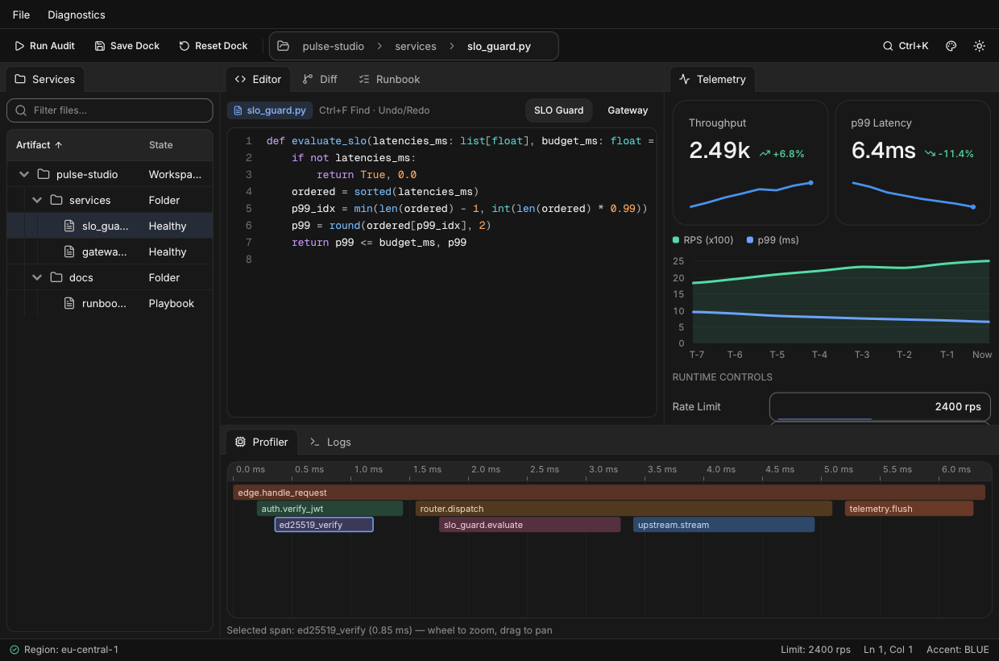

Zero to Hero: The Complete nexa Full Tutorial
Welcome to the complete, end-to-end Zero to Hero course for nexa (v1.4.0)—a zero-dependency Python port of CUI for building fast, native immediate-mode desktop UIs.
By the end of this single comprehensive tutorial, you will go from opening your very first 15-line native window all the way to architecting, testing, and packaging a multi-pane desktop IDE & telemetry studio (Pulse Studio) with interactive docking, virtualized tree & data grids, syntax-highlighted code and Myers diff editors, CommonMark/GFM checklists, live charts, flame profilers, background worker streams, and headless pytest verification.

Curriculum Roadmap
| Module | Skill Level | What You Will Master | Milestone App Built |
|---|---|---|---|
| Module 0 | Level 0 · Zero Setup | Installation, native compilation, value-returning immediate mode, 0% idle CPU, widget IDs (##), & with scopes | hello_hero.py |
| Module 1 | Level 1 · Layouts | Flexbox (row/column), FIT/FILL/GROW/PX/PCT, spacer, stack, responsive grid, scroll & draggable split | workspace_shell.py |
| Module 2 | Level 2 · Forms & Input | Every text/numeric/money/tag input, switches, sliders, selects, date & color pickers, validation, disabled_scope & shortcuts | deploy_configurator.py |
| Module 3 | Level 3 · Chrome & Overlays | menu_bar, toolbar, doc_tabs (dirty/close/reorder), editable path_bar, context_menu, dialog, sheet, toast & Ctrl+K command_palette | scratchpad_chrome.py |
| Module 4 | Level 4 · Data, Code & Charts | 50,000-row virtualized data_grid, tree_table, markdown task lists, code_editor, diff_view, line_chart & drag-and-drop kanban | data_and_code_lab.py |
| Module 5 | Level 5 · Studio & Canvas | Multi-split dockspace, Bezier node_editor + inspector, curve_editor, OKLab gradient_editor, flame_graph, hex_view, timeline_editor & custom SDF canvas | studio_instruments.py |
| Module 6 | Level 6 · Architecture | Functional (ui.run) vs. Procedural (ctx: ui.UI) vs. Object-Oriented (Application, auto-scoped Component, Router/View & reactive Store) | oop_issue_tracker.py |
| Module 7 | Level 7 · Design System | Light/Dark modes, all 8 perceptual OKLCH Accents, 9 Tones, 34 live Token overrides, oklch()/mix_colors(), custom .ttf fonts & --rtl BiDi | design_system_lab.py |
| Module 8 | Level 8 · Concurrency & AI | GIL-free event sleeping, app.wake(), BackgroundRunner (submit & stream), Channel, LogBuffer, AsyncBridge & streaming AI copilot | streaming_copilot.py |
| Module 9 | Level 9 · HERO CAPSTONE | Combining OOP + Store + dockspace + tree_table + code_editor + diff_view + markdown + line_chart + flame_graph + BackgroundRunner | Pulse Studio (examples/zero_to_hero.py) |
| Module 10 | Level 10 · Test & Ship | Synthetic mouse/keyboard headless pytest suites, PNG verification, CustomRenderer GPU integration, LTO builds (660 KB) & PyInstaller/Nuitka binaries | Production Test & Freeze Recipes |
Pro Tip: Every single complete program in this tutorial is syntactically verified and executed headlessly in CI. You can copy any program into a
.pyfile and runpython3 file.pyon Windows, macOS, or Linux—or render it off-screen on a headless server withNEXA_HEADLESS=1 CUI_SCREENSHOT=out.png CUI_SCREENSHOT_FRAMES=20 python3 file.py!
How This Tutorial Is Organized & Complete Syntax Guide
Before jumping into code, spend 3 minutes reading this section. It explains how all 11 sections fit together and translates every piece of nexa syntax into plain English so nothing ever looks mysterious.
1. Guide to the Sections (4 Stages from Zero to Hero)
This tutorial is divided into 4 progressive stages. Every module follows the exact same easy-to-read pattern: (1) Plain-English Concept → (2) New Syntax Breakdown → (3) Complete Copy-Paste Runnable App.
| Stage | Modules | What Each Section Teaches You | How to Read It |
|---|---|---|---|
| Stage 1: Foundations | Modules 0 – 2 | M0 opens your first window and explains how state & IDs work. M1 teaches Flexbox, grids, scrolling, and resizable splits. M2 covers every form input, slider, picker, keyboard shortcut, and validation rule. | Read in order—every later module builds on these three! |
| Stage 2: Desktop Power | Modules 3 – 5 | M3 adds desktop chrome (menu bars, toolbars, tabs, path bars, dialogs, sheets, Ctrl+K). M4 adds 50,000-row virtualized tables, code & diff editors, Markdown checklists, charts, and Kanban boards. M5 adds multi-split dockspaces, node graphs, curves, timelines, and custom vector drawing. | Run each milestone app and play with the widgets live. |
| Stage 3: Scale, Style & Async | Modules 6 – 8 | M6 shows how to organize larger apps using OOP (Application, Component, Router, Store). M7 customizes Light/Dark themes, 8 OKLCH accents, colors, and fonts. M8 runs background threads, logs, and AI token streams without freezing the UI. | Jump to whichever topic your own project needs first, or read straight through. |
| Stage 4: Capstone & Ship | Modules 9 – 10 | M9 combines Stages 1–3 into Pulse Studio (examples/zero_to_hero.py). M10 writes automated headless pytest UI tests and packages single-file executables. | Study M9 as your blueprint for real-world production apps. |
2. Line-by-Line Anatomy of a nexa Program
Here is the smallest interactive nexa program, with every single line explained:
import nexa as ui # 1. Everything in nexa lives under one clean `ui` namespace.
def main() -> None:
count = 0 # 2. Your state is just normal Python variables outside `draw()`.
name = "Ada"
def draw() -> None: # 3. `draw()` describes what the window looks like right now.
nonlocal count, name # 4. Python's `nonlocal` lets `draw()` reassign `count` & `name`.
with ui.column(pad=20, gap=10): # 5. `with` opens a vertical box; indented lines go INSIDE it!
ui.heading(f"Hello, {name}!") # 6. Display text using normal Python f-strings.
name = ui.input("user_box", name) # 7. Pass current `name` IN -> receive edited `name` OUT.
if ui.button("Add +1"): # 8. `if ui.button(...)` is True on the frame clicked!
count += 1
ui.label(f"Clicked {count} times")
ui.run(draw, title="Demo", width=420, height=260) # 9. Opens the native OS window & sleeps at 0% CPU when idle.
if __name__ == "__main__":
main() # 10. Entry point: run `main()` when executed as a script!Pro Tip: Don't like writing
nonlocal? Put your state in a dictionary (state = {"count": 0, "name": "Ada"}→state["count"] += 1) or an OOP class (self.count += 1in Module 6). Because mutating adictorselfattribute doesn't reassign a local variable, you never neednonlocal!
3. Why Do You See Both ui.button(...) and ctx.button(...)?
Throughout the docs, you will see two ways of calling the exact same widgets:
# Style A — Implicit `ui.*` (shortest for small scripts; `draw()` takes 0 arguments)
def draw() -> None:
if ui.button("Save"):
pass
if ui.submitted(): # <-- Function call `ui.submitted()`
pass
# Style B — Explicit `ctx.*` (best for helper functions & OOP classes; `draw(ctx)` takes 1 argument)
def draw(ctx: ui.UI) -> None:
if ctx.button("Save"): # <-- Exact same button!
pass
if ctx.submitted: # <-- Property `ctx.submitted` (no parentheses on `ctx`!)
passui.*automatically finds the active window behind the scenes (contextvars).ctx.*passes the window'sui.UIcontext explicitly—making it easy to split large apps across multiple.pyfiles and classes.ui.run(draw)supports both automatically!
4. The 5 Widget Syntax Patterns (Every Call Shape in nexa)
All 160+ components in nexa follow just 5 simple syntax patterns:
Pattern A — Click Actions (-> bool)
Buttons, menu items, and toolbar icons return True only on the frame you click them:
if ui.button("Run Check", variant=ui.ButtonVariant.PRIMARY, icon=ui.Icon.PLAY):
print("Clicked once!")Pattern B — Value-In, Value-Out (value -> new_value)
Inputs, sliders, switches, checkboxes, selects, and pickers take your current variable and return the updated value. Always assign the result back to your variable!
enabled = ui.switch("Enable cache", enabled) # bool -> bool
volume = ui.slider("Volume", volume, 0.0, 100.0) # float -> float
email = ui.input("email_id", email, label="Work Email") # str -> str
choice = ui.select("plan_id", ["Free", "Pro"], choice) # int -> int (selected index)
lo, hi = ui.range_slider("Bounds", lo, hi, 0.0, 50.0) # returns a (lo, hi) tuple!Pattern C — Rich Result Objects (res = ctx.widget(...))
Complex v1.1 widgets (like code_editor, path_bar, markdown, flame_graph, chat_composer) return a small result object so you can read both the updated value and extra metadata (like cursor line/column or clicked task items):
ed = ctx.code_editor("src_ed", code_text, lang="python", width=ui.FILL, height=320)
code_text = ed.text # Updated source code string
cur_line = ed.line # Current 1-based cursor line number
was_edited = ed.changed # True if edited on this framePattern D — Always-Open Layout Scopes (with ui.row(...):)
Python indentation visually matches your UI hierarchy! Everything indented inside with becomes a child of that container, and exiting the with block closes the container automatically:
with ui.card(pad=16, gap=10): # Outer card (vertical by default)
ui.heading("Server Status") # Top child inside card
with ui.row(gap=8): # Horizontal row inside card
ui.badge("Online") # Left item in row
ui.button("Restart") # Right item in rowPattern E — Conditional Scopes (with ui.dialog(...) as dlg: if dlg:)
Popups, menus, modals, sheets, accordions, and dock panels are only visible some of the time (for example, when a menu is clicked open or a tab is active). For these, always:
- Keep
is_openoutsidedraw()(withnonlocal is_open/global is_open/self.is_open) so it persists across frames instead of resetting every frame, - Bind
as scope:and checkif scope:before emitting inner widgets, and - Sync
is_open = dlg.openright after thewithblock!
is_open = False # Declared OUTSIDE draw() so it persists across frames!
def draw() -> None:
nonlocal is_open # Required in Python closures whenever assigning `is_open = ...`
if ui.button("Open Confirm"):
is_open = True
with ui.dialog("Confirm", is_open) as dlg: # 1. Tell nexa about the dialog
if dlg: # 2. Only build inner buttons when visible!
if ui.button("Close"):
dlg.open = False # 3. Close programmatically if clicked
is_open = dlg.open # 4. Sync back (catches Close, X button, Escape & backdrop!)5. Quick Decoder for Special Symbols, Arguments & Mini-Syntaxes
Whenever you spot a special symbol or layout string in the modules ahead, here is what it means:
| Syntax You See | Plain-English Meaning |
|---|---|
"Delete##row_5" | Displays Delete on screen, while hashing the full string "Delete##row_5" so row 5 doesn't collide with row 6. |
"##silent_switch" | Displays no label text at all, while giving the widget the unique ID "##silent_switch". |
with ui.id_scope(i): | Wraps one iteration of a for loop so every widget inside gets a unique ID automatically. |
pad=16 vs gap=10 | pad is breathing room inside the outer border of a box; gap is spacing between adjacent child items. |
ui.spacer() | An invisible stretchy spring inside a row or column that pushes everything after it to the far right or bottom. |
width=ui.FILL vs ui.GROW(1) | FILL stretches to 100% of parent; GROW(1) shares remaining space along a row/column above/beside fixed bars. |
sp.next() | Inside with ctx.split(...) as sp:, marks where Pane 1 ends and Pane 2 begins. |
for r in grid.rows: | Inside data_grid / tree_table, loops only over the ~20 rows currently visible on screen (so 50,000 rows render instantly!). |
"h0.25([*Files],v0.60([*Code,Diff],[*Logs]))" | Dockspace layout mini-syntax: h0.25(Left, Right) = horizontal split (25% left, 75% right); v0.60(Top, Bottom) = vertical split (60% top, 40% bottom); [A,*B] = tab strip with *B selected! |
6. Top 7 Beginner Syntax Pitfalls & 1-Line Fixes
| If You See This Happen… | Why It Happened | The 1-Line Fix |
|---|---|---|
Typing in ui.input doesn't change the text | Return value wasn't saved back | Write name = ui.input("id", name) instead of bare ui.input("id", name) |
Clicking one button in a for loop triggers all rows | Every row hashed the same button label | Wrap loop body in with ui.id_scope(idx): (or use "Click##" + str(idx)) |
ui.dialog / ui.sheet never closes when clicking Close / X / Escape | is_open = True was placed inside draw() (resetting every frame!) or nonlocal is_open was omitted | Declare is_open outside draw(), add nonlocal is_open inside draw(), and keep is_open = dlg.open |
Pressing Escape or backdrop doesn't close ui.dialog / ui.sheet | is_open wasn't synced from .open | Add is_open = dlg.open right after the with ui.dialog(...) as dlg: block |
TypeError passing height=ui.FILL to code_editor / diff_view | Heavy virtualized editors take pixel float height | Pass width=ui.FILL, height=340 (a number in pixels) |
TypeError: 'bool' object is not callable on ctx.submitted() | On ctx: ui.UI, transition flags are properties | Write if ctx.submitted: (no ()), or top-level if ui.submitted(): |
| Window freezes while fetching data or sleeping | Blocking code ran inside draw() | Dispatch slow work via runner.submit(...) or runner.stream(...) (Module 8) |
Module 0: Zero Setup, First Window & The Immediate-Mode Mental Model
0.1 Installation & Zero-Dependency Architecture
Install nexa-ui from PyPI (imported in Python as import nexa as ui):
pip install nexa-uiImportant: Always install
nexa-ui(pip install nexa-uioruv add nexa-ui) rather thannexa(an unrelated package on PyPI), and avoid naming a local foldernexa/or filenexa.py.
Or install directly from a local git checkout:
pip install -e .What happens under the hood?
- Zero runtime Python dependencies:
nexauses only Python's standard library (ctypes,threading,asyncio,contextvars,dataclasses). - One ~820 KB C99 shared library (
libnexa_cui): Contains all 160+ widgets, Flexbox/CSS-Grid layout, spring physics, OpenGL 3.3 + multi-threaded SIMD CPUSoftwareRenderer, embedded Inter & Geist Mono fonts, and 168 Lucide vector icons. - No
-devsystem header headaches: You do not needpython3-dev,cmake, orlibx11-dev. On Linux,nexaloadslibX11.so.6dynamically viadlopenand falls back seamlessly to its headless CPU renderer on servers or containers.
Whenever you modify C sources or want custom build flags (such as --rtl or --minimal --lto), rebuild directly via:
python3 -m nexa.build0.2 Milestone 0: Your First Interactive Native Window
Create hello_hero.py and run python3 hello_hero.py:
import nexa as ui
def main() -> None:
name = "Explorer"
clicks = 0
history: list[str] = []
def draw() -> None:
nonlocal name, clicks
with ui.column(width=ui.FILL, height=ui.FILL, pad=24, gap=14, bg=ui.Color.BACKGROUND):
# Header row with live title and built-in Sun/Moon theme toggle
with ui.row(width=ui.FILL, align=ui.Align.CENTER):
ui.heading(f"Welcome, {name or 'Anonymous'}!", level=1)
ui.spacer()
ui.theme_toggle()
ui.secondary("Edit your name or press Enter inside the input to log a greeting.")
# Value-returning text input: pass current `str`, receive updated `str`!
name = ui.input("hero_name", name, label="Developer handle", placeholder="Type a name...", clearable=True)
if ui.submitted() and name.strip():
history.append(f"Signed in as @{name.strip()} (#{len(history) + 1})")
# Value-returning button: returns True on the exact frame it was clicked
with ui.row(gap=10, align=ui.Align.CENTER):
if ui.button("Ship Feature", variant=ui.ButtonVariant.PRIMARY, icon=ui.Icon.ROCKET):
clicks += 1
if ui.button("Reset", variant=ui.ButtonVariant.GHOST, disabled=(clicks == 0)):
clicks = 0
ui.badge(f"{clicks} shipped", tone=ui.Tone.SUCCESS if clicks > 0 else ui.Tone.NEUTRAL, dot=True)
if history:
ui.separator()
ui.muted("RECENT SUBMISSIONS")
for idx, entry in enumerate(history[-4:]):
with ui.id_scope(idx):
ui.label(entry)
ui.run(draw, title="Module 0 — Hello Hero", width=560, height=380, accent=ui.Accent.VIOLET)
if __name__ == "__main__":
main()0.3 How nexa Works (And Why It Feels Like Superpowers)
If you come from Tkinter, PyQt, GTK, or wxPython (retained-mode toolkits), you are used to:
- Constructing widget objects (
btn = QPushButton(...)), - Attaching callbacks (
btn.clicked.connect(...)), and - Manually keeping widget state (
input_box.setText(...)) synchronized with your real Python data. Bugs happen whenever those two copies drift out of sync!
If you come from game-engine immediate-mode UIs, you might worry about burning 100% CPU spinning in an infinite while True loop.
nexa gives you the best of both worlds—Event-Driven, Value-Returning Immediate Mode:
| Dimension | Retained GUI (Qt / Tkinter) | Game-Loop IMGUI | nexa (Event-Driven IMGUI) |
|---|---|---|---|
| Source of truth | Split between Python & widget objects | Your variables | Your Python variables only |
| Conditional UI | .show() / .hide() / reparenting | if flag: | Plain Python if / for / match |
| Idle CPU usage | ~0% | 100% (spins at 60fps forever) | 0% CPU (blocks on OS events with GIL released!) |
| Animations | Manual timers | Per-frame math | Automatic 60–120fps C99 spring physics |
When nothing is happening, nexa sleeps inside the OS event queue (0% CPU). The instant you move the mouse, press a key, trigger a spring animation, or call app.wake() from a background thread, nexa runs your draw() function (~0.15 ms), computes Flexbox/Grid layout in a single C99 pass, and renders crisp anti-aliased SDF primitives.
0.4 The Three Golden Rules of nexa
Memorize these three rules now and you will never hit an immediate-mode gotcha:
Rule 1: Widget Identity (id, label##hidden, and id_scope)
To track keyboard focus, scroll offsets, and hover springs across frames, nexa hashes a 32-bit FNV-1a ID for each interactive widget:
- Explicit-ID widgets (
ui.input("email", val),ui.select("role", items, idx),ui.tabs("main_tabs", ...)) hash that firstidstring. - Label-hashed widgets (
ui.button("Save"),ui.checkbox("Enable TLS", tls)) hash their label string. Visible##Hiddensyntax: Everything starting at##is invisible on screen cleanly disambiguating the hash!ui.button("Delete##item_1")andui.button("Delete##item_2")both displayDelete, with distinct IDs.ui.switch("##row_toggle", active)renders a clean label-free switch hashed as"##row_toggle".
- Loops (
with ui.id_scope(key):): Inside anyforloop that renders interactive controls, wrap each iteration inwith ui.id_scope(row_id):so every row gets its own isolated ID namespace!
Rule 2: Unconditional vs. Conditional with Scopes
nexa uses Python with blocks so you never forget an end() call. They come in two flavors:
- Unconditional Layout Scopes (always render children directly inside
with):row,column,box,stack,grid,card,scroll,split,dockspacemenu_bar,toolbar,status_bar,dialog_footer,button_group,kanban,virtual_list,reorderid_scope,disabled_scope,clip_scope
- Conditional Scopes (always bind
as s:and checkif s:before emitting children!):- Popups & Modals:
dialog,sheet,popover,hover_card,menu,context_menu,user_menu,menu_bar_menu,path_bar_menu - Disclosures & Panels:
dock_panel,accordion,expandable_card,tree,reasoning - Structured Views:
table,data_grid,tree_table,inspector,node_editor
- Popups & Modals:
# Declare `confirm_open = False` OUTSIDE `draw()`, with `nonlocal confirm_open` inside `draw()`:
with ui.dialog("Delete Project?", confirm_open, description="This action cannot be undone.") as dlg:
if dlg: # <-- Only build inner widgets when the dialog is actually visible!
with ui.dialog_footer():
if ui.button("Cancel", variant=ui.ButtonVariant.GHOST):
dlg.open = False
if ui.button("Delete", variant=ui.ButtonVariant.DANGER):
dlg.open = False
confirm_open = dlg.open # Captures Cancel/Delete, header X, Escape key & backdrop click!Rule 3: Inspecting Per-Widget Transitions (changed, submitted, focused, blurred)
Right after any widget call, you can inspect how it transitioned on the current frame:
ui.changed()(orctx.changed) — Value changed this frame.ui.submitted()(orctx.submitted) — User pressed Enter insideinput/search.ui.focused()/ui.blurred()— Widget just gained or lost focus this frame.ctx.last_id&ctx.last_rect— Widget's 32-bit ID and previous-frameRect(x, y, w, h)onctx: ui.UI.
Module 1: Layout Mastery — Flexbox, Responsive Grids, Scroll & Split Panes
Every container in nexa shares one ultra-fast C99 constraint layout engine. Once you know its 5 sizing primitives and alignment axes, you can construct any desktop layout in minutes without pixel-pushing.
1.1 The 5 Sizing Primitives
Pass any of these to width= or height= on containers and controls:
| Expression | Behavior | Typical Use |
|---|---|---|
ui.FIT (or None) | Shrink-wraps tightly around child content | Buttons, badges, auto-height cards |
ui.FILL | Expands to 100% of available parent space | Root layout, full-width inputs & panels |
ui.GROW(weight=1.0) | Flex-grows proportionally along a row or column (GROW(2) gets 2× GROW(1)) | Main content area above a fixed status bar |
240 (or ui.PX(240)) | Exact logical pixel size (automatically scaled by OS HiDPI ctx.scale!) | Fixed 220px navigation sidebar |
ui.PCT(50) | Percentage (0..100) of parent dimension | Half-width split cards |
You can also clamp flexible containers with min_width=, max_width=, min_height=, and max_height=.
1.2 Alignment, Justification, Spacers, Stacks, Grids & Splits
- Main-axis distribution (
justify=):ui.Justify.START,CENTER,END,BETWEEN,AROUND. - Cross-axis alignment (
align=):ui.Align.START,CENTER,END,STRETCH. - Fluid push (
ui.spacer()): Inserts aGROW(1)spring inside aroworcolumn, pushing subsequent items to the far right or bottom! - Z-layered
ui.stack(...): Overlaps children in the same box (ideal for corner notification dots on avatars or HUD overlays over a canvas). - Responsive
ui.grid(columns=3, min_column_width=180, gap=14): Automatically wraps columns based on window width whenmin_column_width > 0! - Draggable
ui.split("id", ratio, vertical=False): Renders an interactive resize handle between two panes; callsp.next()between Pane 1 and Pane 2, then saveratio = sp.ratioafter exiting thewithblock.
1.3 New Syntax Breakdown (Before You Run Milestone 1)
Look at the three layout patterns introduced in the Milestone 1 shell below:
height=ui.GROW(1)above a fixedstatus_bar: When a verticalcolumnholds a top header, a middle workspace (height=ui.GROW(1)), and a bottomstatus_bar(),GROW(1)tells the middle workspace to absorb 100% of leftover vertical window height automatically as the user resizes the window.- Draggable two-pane
split(sp.next()&sp.ratio):
with ctx.split("main_split", split_ratio, min_first=320, min_second=200) as sp:
ctx.label("Left pane content")
sp.next() # <-- Switches from Pane 1 (left) to Pane 2 (right)!
ctx.label("Right pane content")
split_ratio = sp.ratio # <-- Saves the dragged divider position for the next frame!- Auto-wrapping responsive
grid:with ctx.grid(columns=3, min_column_width=190, gap=14):arranges cards into 3 columns on wide screens, and automatically wraps down to 2 or 1 column when the pane shrinks narrower than3 * 190px!
1.4 Milestone 1: Responsive 3-Pane Desktop Shell
Let's combine a collapsible sidebar, a draggable split inspector, a scrollable responsive KPI grid, and a status_bar:
import nexa as ui
def main() -> None:
sidebar_collapsed = False
active_nav = 0
split_ratio = 0.68
search_q = ""
nav_items = [
("Cluster Overview", ui.Icon.LAYOUT_DASHBOARD, "6"),
("Compute Nodes", ui.Icon.SERVER, "24"),
("Deployments", ui.Icon.ROCKET, ""),
("Security & Keys", ui.Icon.SHIELD, "1"),
]
metrics = [
("API Requests", "148.2k", +12.4, [90, 104, 112, 128, 135, 148]),
("Median Latency", "3.8 ms", -8.2, [5.1, 4.8, 4.4, 4.1, 3.9, 3.8]),
("Cache Hit Ratio", "99.4%", +0.6, [97.8, 98.4, 98.9, 99.1, 99.3, 99.4]),
("Active Streams", "4,096", +4.1, [3400, 3600, 3720, 3890, 4010, 4096]),
("Error Budget", "99.98%", +0.02, [99.91, 99.94, 99.95, 99.97, 99.98, 99.98]),
("Queue Depth", "14 jobs", -22.0, [42, 35, 29, 24, 18, 14]),
]
def draw(ctx: ui.UI) -> None:
nonlocal sidebar_collapsed, active_nav, split_ratio, search_q
with ctx.column(width=ui.FILL, height=ui.FILL, bg=ui.Color.BACKGROUND):
# 1. Top Header Bar
with ctx.row(width=ui.FILL, pad_x=16, pad_y=10, gap=10, align=ui.Align.CENTER, bg=ui.Color.SURFACE):
if ctx.icon_button(ui.Icon.PANEL_LEFT, tooltip="Toggle sidebar"):
sidebar_collapsed = not sidebar_collapsed
ctx.breadcrumb(["Cloud", nav_items[active_nav][0]])
ctx.spacer()
search_q = ctx.search("shell_q", search_q, placeholder="Filter metrics...", width=220, size=ui.ControlSize.SM)
ctx.theme_toggle()
ctx.separator()
# 2. Middle Workspace (GROW(1) fills all vertical space above status_bar)
with ctx.row(width=ui.FILL, height=ui.GROW(1)):
# Left Sidebar (collapses cleanly from 220px to 56px!)
side_w = 56 if sidebar_collapsed else 220
with ctx.column(width=side_w, height=ui.FILL, pad=10, gap=4, bg=ui.Color.SURFACE_MUTED):
for idx, (label, icon, count_badge) in enumerate(nav_items):
with ctx.id_scope(idx):
if sidebar_collapsed:
if ctx.icon_button(
icon,
variant=ui.ButtonVariant.SECONDARY if active_nav == idx else ui.ButtonVariant.GHOST,
tooltip=label,
):
active_nav = idx
else:
if ctx.nav_item(
label,
icon=icon,
badge=count_badge or None,
selected=(active_nav == idx),
group="shell_nav",
):
active_nav = idx
# Resizable Center + Right Inspector Split
with ctx.split("main_split", split_ratio, min_first=320, min_second=200, width=ui.FILL, height=ui.FILL) as sp:
# Pane 1: Scrollable Responsive KPI Card Grid
with ctx.scroll("kpi_scroll", width=ui.FILL, height=ui.FILL, pad=20, gap=16):
ctx.heading(nav_items[active_nav][0], level=2)
with ctx.grid(columns=3, min_column_width=190, gap=14, width=ui.FILL):
for title, val, delta, spark in metrics:
if search_q and search_q.lower() not in title.lower():
continue
lower_good = "Latency" in title or "Queue" in title
ctx.metric(title, val, delta=delta, spark=spark, lower_is_better=lower_good)
sp.next() # <-- Switch from Pane 1 to Pane 2!
# Pane 2: Right Details Drawer
with ctx.column(width=ui.FILL, height=ui.FILL, pad=16, gap=10, bg=ui.Color.SURFACE):
ctx.heading("Inspector", level=4)
ctx.secondary(f"Split ratio: {sp.ratio:.2f}")
with ctx.card(pad=14, gap=8, muted=True, width=ui.FILL):
ctx.badge("All Regions Healthy", tone=ui.Tone.SUCCESS, dot=True)
ctx.muted("Drag the vertical divider to resize panes smoothly.")
split_ratio = sp.ratio
# 3. Bottom Status Bar
with ctx.status_bar():
ctx.status_bar_text("Connected · eu-central-1", icon=ui.Icon.WIFI, tone=ui.Tone.SUCCESS)
ctx.status_bar_spacer()
ctx.status_bar_item(f"Sidebar: {'Compact' if sidebar_collapsed else 'Expanded'}")
ctx.status_bar_item(f"Split: {int(split_ratio * 100)}%")
ui.run(draw, title="Module 1 — Responsive 3-Pane Shell", width=1020, height=620, theme=ui.ThemeMode.DARK)
if __name__ == "__main__":
main()Module 2: Forms, Pickers, Validation & Keyboard Shortcuts
Desktop tools live and breathe on rich data entry. Unlike browser forms that require external date/color/money libraries, nexa builds every control natively in C99 with full Tab/Shift+Tab focus rings, clipboard copy/paste, and undo support.
2.1 Quick Tour of Form & Picker Families
- Buttons:
ui.button(label, variant=..., size=..., icon=..., loading=False, full_width=False)- 7
ui.ButtonVariants:DEFAULT,PRIMARY,SECONDARY,OUTLINE,GHOST,DANGER,LINK. - 3
ui.ControlSizes:SM,MD,LG. - Special actions:
icon_button,split_button,confirm_button(two-click destructive guard),hold_button(press-and-hold radial ring),copy_button.
- 7
- Text & Code Inputs:
input(..., password=True, clearable=True),search,textarea,inline_edit,tag_input,otp_input((code, completed)),password_strength. - Numeric & Financial:
number(spinbox + drag),money_input(currency formatting),slider,range_slider((lo, hi)),ruler_slider,histogram_slider,scrub(Houdini/Blender-style drag-value field),counter. - Choices & Pickers:
checkbox,switch,radio,radio_cards,segmented,toggle_group,chip,select(searchable=True),combobox,multi_select,date_picker(ui.Date(y, m, d)),date_range_picker,time_picker((hour, minute)),color_picker,dropzone. - Keyboard Shortcuts:
if ui.shortcut(ui.Mod.CTRL, ui.Key.S): ...triggers cleanly when no conflicting text input owns the chord, andui.kbd("Ctrl+S")renders styled keycaps!
2.2 Milestone 2: Interactive Cloud Deployment Configurator
This standalone app combines text/tag/money inputs, searchable select, segmented, range_slider, date_picker, color_picker, disabled_scope, shortcut(Mod.CTRL, Key.S), and real-time validation:
import nexa as ui
def main() -> None:
service_name = "checkout-api"
env_idx = 1 # 0=Staging, 1=Production, 2=Shadow
region_idx = 0
autoscale_enabled = True
min_replicas, max_replicas = 2.0, 12.0
monthly_cap = 450.00
tags = ["payments", "pci-tier-1"]
release_date = ui.Date(2026, 11, 15)
badge_color = ui.Color.hex("#53dca6")
api_secret = "sk_live_98a7f6d5c4b3"
saved_count = 0
regions = ["eu-central-1 (Frankfurt)", "us-east-1 (Virginia)", "ap-northeast-1 (Tokyo)", "us-west-2 (Oregon)"]
def draw(ctx: ui.UI) -> None:
nonlocal service_name, env_idx, region_idx, autoscale_enabled
nonlocal min_replicas, max_replicas, monthly_cap, tags, release_date, badge_color, api_secret, saved_count
# Validation rules computed directly from Python state!
errors: list[str] = []
if len(service_name.strip()) < 3 or " " in service_name:
errors.append("Service name must be at least 3 characters with no spaces.")
if len(api_secret) < 8:
errors.append("API secret must be at least 8 characters.")
can_deploy = len(errors) == 0
if ctx.shortcut(ui.Mod.CTRL, ui.Key.S) and can_deploy:
saved_count += 1
ctx.toast("Configuration saved", description=f"Revision #{saved_count} committed.", tone=ui.Tone.SUCCESS)
with ctx.scroll("form_scroll", width=ui.FILL, height=ui.FILL, pad=24, gap=16):
with ctx.row(width=ui.FILL, align=ui.Align.CENTER):
ctx.heading("Service Deployment Configurator", level=2)
ctx.spacer()
ctx.kbd("Ctrl+S")
ctx.theme_toggle()
if errors:
ctx.alert("Validation Issues", description=" ".join(errors), tone=ui.Tone.DANGER, icon=ui.Icon.CIRCLE_ALERT)
with ctx.grid(columns=2, min_column_width=320, gap=16, width=ui.FILL):
# Left Card: Core Identity & Routing
with ctx.card(pad=20, gap=12):
ctx.heading("1. Identity & Region", level=4)
service_name = ctx.input("svc_name", service_name, label="Service slug", clearable=True)
env_idx = ctx.segmented("env_seg", ["Staging", "Production", "Shadow"], env_idx, full_width=True)
region_idx = ctx.select("region_sel", regions, region_idx, label="Primary Region", searchable=True)
tags = list(ctx.tag_input("svc_tags", tags, label="Routing Tags", placeholder="Add tag + Enter"))
api_secret = ctx.input("svc_secret", api_secret, label="Signing Secret", password=True)
ctx.password_strength(api_secret)
# Right Card: Scaling, Budget & Schedule
with ctx.card(pad=20, gap=12):
ctx.heading("2. Capacity & Schedule", level=4)
autoscale_enabled = ctx.switch(
"Horizontal Autoscaling",
autoscale_enabled,
description="Scale worker pods dynamically from CPU & queue p95.",
)
# Wrap dependent controls in `disabled_scope` when autoscaling is off!
with ctx.disabled_scope(not autoscale_enabled):
min_replicas, max_replicas = ctx.range_slider(
"Replica Bounds", min_replicas, max_replicas, 1.0, 32.0
)
ctx.muted(f"Pool range: {int(min_replicas)} → {int(max_replicas)} pods")
monthly_cap = ctx.money_input("budget_cap", monthly_cap, label="Monthly Spend Cap", code="USD")
with ctx.row(gap=12, align=ui.Align.CENTER):
release_date = ctx.date_picker("rel_date", release_date, label="Target Cutover")
badge_color = ctx.color_picker("svc_color", badge_color)
# Action Footer Card
with ctx.card(pad=16, dir=ui.Direction.ROW, align=ui.Align.CENTER, gap=12, muted=True, width=ui.FILL):
ctx.badge(["STAGING", "PRODUCTION", "SHADOW"][env_idx], tone=ui.Tone.ACCENT, solid=True)
ctx.secondary(
f"{service_name or '(unnamed)'} · {regions[region_idx].split()[0]} · Cap ${monthly_cap:,.2f}/mo"
)
ctx.spacer()
if ctx.button(
"Deploy Release",
variant=ui.ButtonVariant.PRIMARY,
icon=ui.Icon.ROCKET,
disabled=not can_deploy,
):
saved_count += 1
ctx.toast(f"Deployed {service_name}!", description=f"Release #{saved_count} live.", tone=ui.Tone.SUCCESS)
ui.run(draw, title="Module 2 — Forms, Pickers & Validation", width=920, height=640, accent=ui.Accent.GREEN)
if __name__ == "__main__":
main()Module 3: Desktop Chrome, Menus, Tabs, Dialogs, Sheets & Command Palette
Real desktop software needs more than forms—it needs application chrome: menu bars with keyboard mnemonics, icon toolbars, closable/reorderable document tabs with unsaved-change dots, editable breadcrumb address bars (path_bar, new in v1.1!), right-click context menus, slide-over sheets, confirmation dialogs, and a Ctrl+K command palette.
3.1 How doc_tabs & path_bar Work
doc_tabs: Pass alist[ui.DocTab(title, icon=..., dirty=bool)]andselectedindex:
res = ctx.doc_tabs("open_docs", tabs, active_idx)
active_idx = res.apply_to(tabs) # Handles select, drag-to-reorder & close in 1 line!path_bar(New in v1.1): Renders clickable breadcrumb segments that turn into a live text input when you click the empty bar area!pb.clicked >= 0: User clicked segmentpb.clicked—truncatesegments[pb.clicked + 1:].pb.submitted: Non-emptystrwhen the user typed a custom/path/to/fileand pressed Enter.
3.2 New Syntax Breakdown (Menus, Context Menus & Command Palette)
Notice how clean overlay & chrome syntax is in Milestone 3:
- Nested Menu Bars:
with ctx.menu_bar():is always visible, while each dropdownwith ctx.menu_bar_menu("File") as m: if m:is conditional (only builds itsmenu_item(...)rows when"File"is open!). - Right-Click
context_menu: Placewith ctx.context_menu("id") as cm: if cm:immediately after any widget (liketextareaorcard)—nexaautomatically binds right-click on that previous widget to open the popup menu! command_palette(is_open, commands): Returns a 2-tuple(palette_open, chosen_index). When the user picks a command with Enter or mouse click,chosen_indexis0..N-1(otherwise-1).
3.3 Milestone 3: Multi-Tab Scratchpad with Full Desktop Chrome
import nexa as ui
def main() -> None:
docs = [
{"title": "architecture.md", "body": "# System Architecture\n\nEvent-driven C99 core + Python bindings.", "saved": True},
{"title": "todo.md", "body": "- Ship v1.1 dockspace\n- Add Ctrl+K command palette", "saved": False},
{"title": "notes.txt", "body": "Right-click anywhere in the editor area for quick actions!", "saved": True},
]
active_idx = 0
path_segs = ["workspace", "notes", "architecture.md"]
palette_open = False
info_sheet_open = False
pending_close_idx = -1
commands = [
ui.Command("New Scratch Tab", icon=ui.Icon.PLUS, group="File", shortcut="Ctrl+N"),
ui.Command("Mark Current Tab Saved", icon=ui.Icon.SAVE, group="File", shortcut="Ctrl+S"),
ui.Command("Open Document Properties Sheet", icon=ui.Icon.SLIDERS_HORIZONTAL, group="View"),
ui.Command("Toggle Light / Dark Theme", icon=ui.Icon.SUN, group="Appearance"),
]
def create_new_tab() -> None:
nonlocal active_idx
n = len(docs) + 1
docs.append({"title": f"untitled_{n}.md", "body": f"# Draft {n}\n", "saved": False})
active_idx = len(docs) - 1
path_segs[-1] = docs[active_idx]["title"]
def draw(ctx: ui.UI) -> None:
nonlocal active_idx, palette_open, info_sheet_open, pending_close_idx
if ctx.shortcut(ui.Mod.CTRL, ui.Key.K):
palette_open = not palette_open
if ctx.shortcut(ui.Mod.CTRL, ui.Key.N):
create_new_tab()
if ctx.shortcut(ui.Mod.CTRL, ui.Key.S) and docs:
docs[active_idx]["saved"] = True
ctx.toast(f"Saved {docs[active_idx]['title']}", tone=ui.Tone.SUCCESS)
with ctx.column(width=ui.FILL, height=ui.FILL, bg=ui.Color.BACKGROUND):
# 1. Menu Bar
with ctx.menu_bar():
with ctx.menu_bar_menu("File") as m:
if m:
if ctx.menu_item("New Tab", icon=ui.Icon.PLUS, shortcut="Ctrl+N"):
create_new_tab()
if ctx.menu_item("Save", icon=ui.Icon.SAVE, shortcut="Ctrl+S", disabled=not docs):
docs[active_idx]["saved"] = True
ctx.toast(f"Saved {docs[active_idx]['title']}", tone=ui.Tone.SUCCESS)
with ctx.menu_bar_menu("View") as m:
if m:
if ctx.menu_item("Document Sheet…", icon=ui.Icon.SLIDERS_HORIZONTAL):
info_sheet_open = True
if ctx.menu_item("Command Palette…", icon=ui.Icon.SEARCH, shortcut="Ctrl+K"):
palette_open = True
# 2. Toolbar + Editable Path Bar
with ctx.toolbar():
if ctx.toolbar_button(ui.Icon.PLUS, label="New", tooltip="Create tab (Ctrl+N)"):
create_new_tab()
if ctx.toolbar_button(ui.Icon.SAVE, label="Save", disabled=not docs):
docs[active_idx]["saved"] = True
ctx.toast(f"Saved {docs[active_idx]['title']}", tone=ui.Tone.SUCCESS)
ctx.toolbar_separator()
pb = ctx.path_bar("chrome_path", path_segs, icon=ui.Icon.FOLDER_OPEN, width=340)
if pb.clicked >= 0:
del path_segs[pb.clicked + 1 :]
elif pb.submitted:
parts = [p for p in pb.submitted.strip("/").split("/") if p]
if parts:
path_segs[:] = parts
ctx.toolbar_spacer()
if ctx.toolbar_button(ui.Icon.SLIDERS_HORIZONTAL, label="Inspect"):
info_sheet_open = True
if ctx.toolbar_button(ui.Icon.SEARCH, label="Ctrl+K"):
palette_open = True
ctx.theme_toggle()
# 3. Reorderable Dirty Document Tabs
if docs:
tab_models = [
ui.DocTab(d["title"], icon=ui.Icon.FILE_TEXT, dirty=not d["saved"])
for d in docs
]
tab_res = ctx.doc_tabs("doc_strip", tab_models, active_idx)
active_idx = tab_res.selected
if tab_res.moved and 0 <= tab_res.move_from < len(docs) and 0 <= tab_res.move_to < len(docs):
moved_doc = docs.pop(tab_res.move_from)
docs.insert(tab_res.move_to, moved_doc)
path_segs[-1] = docs[active_idx]["title"]
if tab_res.close >= 0:
if not docs[tab_res.close]["saved"]:
pending_close_idx = tab_res.close # Ask confirmation before discarding unsaved edits!
else:
docs.pop(tab_res.close)
active_idx = max(0, min(active_idx, len(docs) - 1))
# 4. Main Document Body + Right-Click Context Menu
with ctx.column(width=ui.FILL, height=ui.GROW(1), pad=18, gap=10):
if not docs:
ctx.empty_state(
"No Open Documents",
description="Create a new scratchpad tab or press Ctrl+K.",
icon=ui.Icon.FILE_TEXT,
)
else:
cur = docs[active_idx]
new_body = ctx.textarea("scratch_editor", cur["body"], width=ui.FILL, height=ui.GROW(1))
if new_body != cur["body"]:
cur["body"] = new_body
cur["saved"] = False
# Attach a right-click context_menu to the preceding widget!
with ctx.context_menu("editor_ctx") as cm:
if cm:
if ctx.menu_item("Insert Timestamp Header", icon=ui.Icon.CLOCK):
cur["body"] += "\n\n## Entry — 2026-11-07\n"
cur["saved"] = False
if ctx.menu_item("Mark Saved", icon=ui.Icon.CHECK):
cur["saved"] = True
# 5. Status Bar
with ctx.status_bar():
ctx.status_bar_text(f"{len(docs)} open tab(s)", icon=ui.Icon.LAYERS)
ctx.status_bar_spacer()
if docs:
chars = len(docs[active_idx]["body"])
ctx.status_bar_item(f"{chars} chars")
ctx.status_bar_item("Saved" if docs[active_idx]["saved"] else "Modified")
# 6. Slide-Over Sheet Drawer
with ctx.sheet("Document Inspector", info_sheet_open, side=ui.Side.RIGHT, size=320) as sh:
if sh and docs:
cur = docs[active_idx]
with ctx.column(pad=16, gap=12):
cur["title"] = ctx.input("doc_rename", cur["title"], label="Filename")
ctx.badge("Clean" if cur["saved"] else "Unsaved Edits", tone=ui.Tone.SUCCESS if cur["saved"] else ui.Tone.WARNING)
ctx.muted(f"Lines: {cur['body'].count(chr(10)) + 1}")
info_sheet_open = sh.open
# 7. Unsaved Close Confirmation Dialog
with ctx.dialog(
"Discard Unsaved Changes?",
pending_close_idx >= 0,
description="This tab has unsaved edits. Close anyway?",
) as dlg:
if dlg:
with ctx.dialog_footer():
if ctx.button("Keep Open", variant=ui.ButtonVariant.GHOST):
pending_close_idx = -1
dlg.open = False
if ctx.button("Discard & Close", variant=ui.ButtonVariant.DANGER):
if 0 <= pending_close_idx < len(docs):
docs.pop(pending_close_idx)
active_idx = max(0, min(active_idx, len(docs) - 1))
pending_close_idx = -1
dlg.open = False
if not dlg.open:
pending_close_idx = -1
# 8. Ctrl+K Command Palette
palette_open, cmd = ctx.command_palette(palette_open, commands)
if cmd == 0:
create_new_tab()
elif cmd == 1 and docs:
docs[active_idx]["saved"] = True
elif cmd == 2:
info_sheet_open = True
elif cmd == 3:
ctx.theme_mode = ui.ThemeMode.LIGHT if ctx.theme_mode == ui.ThemeMode.DARK else ui.ThemeMode.DARK
ui.run(draw, title="Module 3 — Desktop Chrome & Overlays", width=940, height=600, theme=ui.ThemeMode.DARK)
if __name__ == "__main__":
main()Module 4: High-Density Data, Markdown, Code Editor, Diffs & Charts
One of nexa's biggest advantages over Electron or pure-Python GUI toolkits is raw data throughput:
virtual_list&data_gridonly construct widgets for the ~20 rows currently visible on screen (for r in grid.rows:), letting you scroll 50,000 to 1,000,000 rows at 120fps with zero lag!tree_table(v1.1) brings the same virtualization to hierarchical trees with indent guides, column sorting (ui.tree_sort), and keyboard navigation.code_editor,diff_view(+ headlessui.diff_compute/ui.diff_words), andmarkdown(+ interactive GFM checklists viares.apply_task) give you full developer-grade document & source tools out of the box.
Pitfall to Avoid: On
code_editor,diff_view,flame_graph,hex_view,curve_editor, andtimeline_editor,width=acceptsSizeLike(ui.FILLor pixels), whereasheight=expects a concretefloatpixel height (e.g.,height=320).
4.1 New Syntax Breakdown (data_grid, markdown Tasks & kanban Moves)
Three high-leverage syntax idioms power Milestone 4:
- Virtualized
data_gridrow loop:
with ctx.data_grid("id", cols, 50_000, width=ui.FILL, height=ui.GROW(1)) as grid:
if grid:
for r in grid.rows: # Loops ONLY over ~18 visible rows on screen!
grid.row(r) # Starts visible row `r`
grid.cell_text(f"#{r}") # Read-only text cell
val = grid.cell_edit(val) # Double-click inline editable cell!- Interactive Markdown Task Lists:
md_res = ctx.markdown("id", md_src)renders GitHub-flavored- [ ]/- [x]checkboxes; when a user clicks one,md_res.task_toggledisTrueandmd_src = md_res.apply_task(md_src)rewrites the[x]in your Markdown string automatically! - Drag-and-Drop
kanban: Build columns withwith board.column(title, count):and cards withwith board.card(card_id):. After exitingwith ctx.kanban(...) as board:, checkif board.move is not None:(mv.card,mv.from_column,mv.to_column,mv.to_index) to move the item in your Python list!
4.2 Milestone 4: 50,000-Row Data Grid, Code/Diff/Markdown & Kanban Lab
import nexa as ui
BASELINE_SNIPPET = """\
def batch_score(records: list[float]) -> float:
return sum(records) / max(1, len(records))
"""
EDITED_SNIPPET = """\
def batch_score(records: list[float], trim: int = 2) -> float:
if len(records) <= trim * 2:
return sum(records) / max(1, len(records))
core = sorted(records)[trim:-trim]
return round(sum(core) / len(core), 4)
"""
NOTES_MD = """\
### Sprint Verification Notes
- [x] Benchmark 50,000-row virtualized `data_grid` at < 0.2 ms/frame
- [x] Verify Myers `diff_view` intraline word highlights
- [ ] Move validated cards to **Shipped** on the Kanban tab
"""
def main() -> None:
tab_idx = 0
row_count = 50_000
edits: dict[int, str] = {}
grid_sort = ui.TableSort(0, False)
grid_cursor = 0
code_src = EDITED_SNIPPET
md_src = NOTES_MD
# Kanban columns: list of (column_title, tone_hex, cards_list)
columns = [
("Backlog", "#6ba3ff", [(101, "Add Parquet export"), (102, "Add CSV clipboard copy")]),
("In Review", "#ffcb62", [(103, "Trimmed mean scorer"), (104, "50k row virtualizer")]),
("Shipped", "#53dca6", [(105, "CUI 1.1 ABI bridge")]),
]
def find_and_move_card(mv: ui.KanbanMove) -> None:
src_cards = columns[mv.from_column][2]
dst_cards = columns[mv.to_column][2]
for idx, card_tuple in enumerate(src_cards):
if card_tuple[0] == mv.card:
item = src_cards.pop(idx)
dst_cards.insert(min(mv.to_index, len(dst_cards)), item)
break
def draw(ctx: ui.UI) -> None:
nonlocal tab_idx, grid_sort, grid_cursor, code_src, md_src
with ctx.column(width=ui.FILL, height=ui.FILL, pad=18, gap=12, bg=ui.Color.BACKGROUND):
with ctx.row(width=ui.FILL, align=ui.Align.CENTER):
ctx.heading("Data, Code & Planning Lab", level=2)
ctx.spacer()
tab_idx = ctx.tabs(
"lab_tabs",
["50k Data Grid", "Code & Diff", "Markdown & Charts", "Kanban Board"],
tab_idx,
variant=ui.TabsVariant.PILL,
)
ctx.theme_toggle()
# Tab 0: 50,000-Row Virtualized Spreadsheet Data Grid
if tab_idx == 0:
ctx.secondary("Only visible rows are materialized per frame—double-click any Note cell to edit inline!")
cols = [
ui.GridColumn("Row #", width=90, sortable=True, fixed=True),
ui.GridColumn("Service", width=160, sortable=True),
ui.GridColumn("Latency", width=110, align=ui.TextAlign.RIGHT),
ui.GridColumn("Editable Note (Double-Click)", width=320, priority=1),
]
with ctx.data_grid(
"massive_grid",
cols,
row_count,
width=ui.FILL,
height=ui.GROW(1),
striped=True,
sort=grid_sort,
cursor=grid_cursor,
hide_checkboxes=True,
) as grid:
if grid:
for r in grid.rows: # <-- Only ~18 visible indices out of 50,000!
idx = (row_count - 1 - r) if (grid.sort and grid.sort.descending) else r
grid.row(r)
grid.cell_text(f"#{idx:05d}")
grid.cell_text(["edge-gw", "auth-svc", "billing-db", "search-idx"][idx % 4])
grid.cell_text(f"{1.8 + (idx % 17) * 0.35:.2f} ms")
cur_note = edits.get(idx, "Nominal throughput")
new_note = grid.cell_edit(cur_note)
if new_note != cur_note:
edits[idx] = new_note
if grid.sort is not None:
grid_sort = grid.sort
grid_cursor = grid.cursor
# Tab 1: Live Code Editor + Side-by-Side Myers Diff
elif tab_idx == 1:
_, stats = ui.diff_compute(BASELINE_SNIPPET, code_src)
ctx.badge(f"Live Diff: +{stats.added} / -{stats.removed} lines across {stats.hunks} hunk(s)", tone=ui.Tone.ACCENT)
with ctx.grid(columns=2, min_column_width=360, gap=12, width=ui.FILL):
ed = ctx.code_editor("lab_editor", code_src, lang="python", width=ui.FILL, height=420)
code_src = ed.text
ctx.diff_view(
"lab_diff",
BASELINE_SNIPPET,
code_src,
mode=ui.DiffMode.SPLIT,
language="python",
old_title="baseline.py",
new_title="working.py",
width=ui.FILL,
height=420,
)
# Tab 2: Interactive GFM Markdown + Native Charts
elif tab_idx == 2:
with ctx.grid(columns=2, min_column_width=340, gap=16, width=ui.FILL):
with ctx.card(pad=16, gap=10):
md_res = ctx.markdown("sprint_md", md_src, width=ui.FILL)
if md_res.task_toggled:
md_src = md_res.apply_task(md_src)
with ctx.card(pad=16, gap=12):
ctx.heading("Latency Percentile Trend", level=4)
ctx.line_chart(
"p99_trend",
[
ui.Series("p50 (ms)", [2.1, 2.0, 1.9, 1.8, 1.7, 1.6], "#53dca6"),
ui.Series("p99 (ms)", [8.4, 7.9, 7.1, 6.4, 5.8, 5.2], "#a78bff"),
],
labels=["Mon", "Tue", "Wed", "Thu", "Fri", "Sat"],
width=ui.FILL,
height=220,
area=True,
smooth=True,
)
# Tab 3: Drag-and-Drop Kanban Board
else:
with ctx.kanban("sprint_kanban") as board:
for col_title, dot_hex, cards in columns:
with board.column(col_title, len(cards), dot=dot_hex, width=280):
for cid, ctitle in cards:
with board.card(cid):
ctx.label(ctitle)
ctx.muted(f"TASK-{cid}")
if board.move is not None:
find_and_move_card(board.move)
ui.run(draw, title="Module 4 — Data, Code, Diff & Kanban", width=1060, height=640, theme=ui.ThemeMode.DARK)
if __name__ == "__main__":
main()Module 5: Studio & Creative Tools — Dockspace, Node Graphs, Curves, Timelines & Custom SDF Canvas
With CUI v1.1–1.4 synced into nexa, you can build full game-engine, audio/video NLE, debugger, and hardware instrumentation studios:
dockspace&dock_panel: Multi-split tabbed workspaces! Pass a compact layout string like"h0.32([*Graph,Hex],v0.55([*Canvas],[*Timeline,Flame]))":h<ratio>(A,B)splits horizontally (left,right);v<ratio>(A,B)splits vertically (top,bottom).[PanelA,*ActivePanel,-HiddenPanel]creates a tab group where*marks the initially selected tab.- Users can drag any panel tab to re-dock or split interactively, and
ctx.dock_save("id")/ctx.dock_load("id", layout)serializes the entire workspace!
node_editor+inspector: Pan/zoom Bezier node graphs (ed.node,ed.input,ed.output,ed.content,ed.link) paired with Houdini/Unity-style property sheets (prop_float,prop_color,prop_bool,prop_enum).curve_editor+gradient_editor+timeline_editor: Evaluate your Bezier curves and perceptual OKLab color stops directly on anyxin[0, 1]viaui.curve_eval(keys, x)andui.gradient_eval(stops, t)!- Custom Vector
canvas: Reserve layout space withctx.canvas("id", width, height, paint_fn)and draw anti-aliased SDF shapes (draw_rect_gradient,draw_polyline,draw_circle,draw_arc,draw_text).
5.1 New Syntax Breakdown (dockspace Strings, node_editor & canvas)
Before running Milestone 5, decode these three studio patterns:
- Reading a
dockspacelayout string:
"h0.44([*Graph,Hex],v0.58([*Oscilloscope],[*Timeline]))" means:
- Split the window horizontally (
h0.44) into 44% Left and 56% Right.- On the Left, create a tab group
[ *Graph, Hex ](*makesGraphthe active tab). - On the Right, split vertically (
v0.58) into 58% Top ([*Oscilloscope]) and 42% Bottom ([*Timeline]). - Then inside
with ctx.dockspace(...):, emit eachwith ctx.dock_panel("Graph") as p: if p:matching those exact panel titles!
- On the Left, create a tab group
- Node Graph Scopes: Inside
with ctx.node_editor("id", node_view) as ed: if ed:, wrap each node inwith ed.node(id, x, y, "Title") as n:, put controls insidewith ed.content():, declare pins withed.input(pin_id, "In")/ed.output(pin_id, "Out"), and read back dragged coordinates vian.x, n.y! - Custom Vector
canvasCallback:ctx.canvas("id", ui.FILL, ui.FILL, paint_fn)lets Flexbox compute the exact screen rectangler: ui.Rect(r.x,r.y,r.w,r.h) first, then calls yourpaint_fn(c, r)to draw crisp GPU/SIMD lines, arcs, gradients, and text insider.
5.2 Milestone 5: Interactive Synth Node Studio & Live SDF Oscilloscope
import math
import nexa as ui
def main() -> None:
node_view = ui.NodeView(0.0, 0.0, 1.0)
node_pos = {1: [30.0, 40.0], 2: [270.0, 55.0]}
links: list[tuple[int, int, int]] = [(1, 102, 201)]
next_link_id = 2
freq_hz = 3.0
amp = 0.72
curve_keys = [
ui.CurveKey(0.0, 0.1, out_dx=0.25, out_dy=0.0, mode=ui.CurveMode.SMOOTH),
ui.CurveKey(0.5, 0.95, in_dx=-0.15, in_dy=0.0, out_dx=0.15, out_dy=0.0, mode=ui.CurveMode.SMOOTH),
ui.CurveKey(1.0, 0.2, in_dx=-0.25, in_dy=0.0, mode=ui.CurveMode.SMOOTH),
]
grad_stops = [
ui.GradientStop(0.0, "#7747ff"),
ui.GradientStop(0.5, "#0562ef"),
ui.GradientStop(1.0, "#53dca6"),
]
packet = bytearray(b"\x4e\x45\x58\x41\x01\x10\x00\xff\x20\x40\x80\xc0\xff\x00\x55\xaa")
tracks = [
ui.TimelineTrack(
"Modulation",
icon=ui.Icon.ACTIVITY,
color=1,
clips=[ui.TimelineClip(0.5, 4.2, name="intro_sweep", selected=True), ui.TimelineClip(4.8, 8.5, name="drop")],
)
]
playhead = 2.4
layout = "h0.44([*Graph,Hex],v0.58([*Oscilloscope],[*Timeline]))"
def draw(ctx: ui.UI) -> None:
nonlocal node_view, next_link_id, freq_hz, amp, playhead
with ctx.column(width=ui.FILL, height=ui.FILL, pad=6, bg=ui.Color.BACKGROUND):
with ctx.dockspace("synth_dock", layout=layout, width=ui.FILL, height=ui.FILL):
# 1. Node Graph + Curve & Gradient Controls
with ctx.dock_panel("Graph", icon=ui.Icon.GIT_BRANCH) as p:
if p:
with ctx.column(width=ui.FILL, height=ui.FILL, pad=8, gap=8):
with ctx.node_editor("synth_nodes", node_view, width=ui.FILL, height=250, no_minimap=True) as ed:
if ed:
with ed.node(1, node_pos[1][0], node_pos[1][1], "Oscillator", width=185, icon=ui.Icon.AUDIO_LINES) as n1:
with ed.content():
freq_hz = ctx.slider("Hz", freq_hz, 0.5, 10.0, show_value=True, format="%.1f")
ed.output(102, "Signal Out")
node_pos[1] = [n1.x, n1.y]
with ed.node(2, node_pos[2][0], node_pos[2][1], "Envelope", width=185, icon=ui.Icon.SLIDERS_HORIZONTAL) as n2:
ed.input(201, "Signal In")
with ed.content():
amp = ctx.slider("Gain", amp, 0.1, 1.0, show_value=True, format="%.2f")
node_pos[2] = [n2.x, n2.y]
for lid, a_pin, b_pin in links:
ed.link(lid, a_pin, b_pin)
node_view = ed.view
for a_pin, b_pin in ed.created_links:
links.append((next_link_id, a_pin, b_pin))
next_link_id += 1
ctx.muted("ENVELOPE CURVE & OKLAB COLOR RAMP")
ctx.curve_editor("env_curve", curve_keys, width=ui.FILL, height=120)
ctx.gradient_editor("wave_grad", grad_stops, width=ui.FILL)
# 2. Editable Binary Hex Inspector
with ctx.dock_panel("Hex", icon=ui.Icon.CPU) as p:
if p:
ctx.hex_view(
"firmware_hex",
packet,
editable=True,
ranges=[ui.HexRange(0, 4, tone=ui.Tone.ACCENT, label="Header")],
width=ui.FILL,
height=360,
)
# 3. Custom SDF Vector Canvas driven by Curve + OKLab Gradient!
with ctx.dock_panel("Oscilloscope", icon=ui.Icon.ACTIVITY) as p:
if p:
def paint_wave(c: ui.UI, r: ui.Rect) -> None:
with c.clip_scope(r):
c.draw_rect_gradient(r, "#0b1020", "#131c33", radius=10)
steps = 96
pts: list[tuple[float, float]] = []
for i in range(steps + 1):
t = i / steps
env = ui.curve_eval(curve_keys, t)
y = r.y + r.h * 0.5 - math.sin(t * math.tau * freq_hz + playhead) * (r.h * 0.38) * amp * env
pts.append((r.x + t * r.w, y))
wave_col = ui.gradient_eval(grad_stops, (playhead % 10.0) / 10.0)
c.draw_polyline(pts, wave_col, thickness=2.6)
c.draw_text(
f"SDF Vector Synth · {freq_hz:.1f} Hz · Playhead {playhead:.2f}s",
(r.x + 14, r.y + 12),
"#e2e8f0",
size=13,
)
with ctx.column(width=ui.FILL, height=ui.FILL, pad=8):
ctx.canvas("wave_canvas", ui.FILL, ui.FILL, paint_wave)
# 4. Multi-Track NLE Timeline
with ctx.dock_panel("Timeline", icon=ui.Icon.CLOCK) as p:
if p:
tl = ctx.timeline_editor("synth_tl", tracks, playhead, start=0.0, end=10.0, width=ui.FILL, height=180)
playhead = tl.time
ui.run(draw, title="Module 5 — Studio Dockspace, Nodes & SDF Canvas", width=1120, height=680, theme=ui.ThemeMode.DARK)
if __name__ == "__main__":
main()Module 6: Scaling Architecture — Functional vs. Procedural vs. Object-Oriented
nexa is uniquely ergonomic because all three Python paradigms are first-class citizens and call the exact same widget names:
| Style | Entry Point | When to Choose It |
|---|---|---|
| 1. Functional | ui.run(draw) | Quick utilities, scripts, single-file tools (< 250 lines) |
| 2. Procedural | with ui.App(...) as app: while app.frame(): | Explicit ctx: ui.UI helper modules, multi-window apps, custom loops |
| 3. Object-Oriented | class MyApp(ui.Application): | Multi-screen desktop products, reusable Component libraries, shared Store[T] |
6.1 The 4 Pillars of nexa's OOP Layer
ui.Application: Manages your window (self.app),self.ui, thread-poolself.runner, lazyself.async_bridge, andself.router. Overridesetup(self),build(self, ctx), and optionalon_close(self).ui.Component(key): Every instance automatically pushesself.keyonto CUI's ID stack when called (self.my_card(ctx)). TwoComponentinstances can render identically labeled"Save"or"Delete"buttons with zero ID collisions! Plus,on_mount(self, ctx)runs once before the first render, andbuild(self, ctx)can return values directly to the parent!ui.Router&ui.View: Register named screens (self.router.register("detail", DetailView("detail"))), navigate with parameters (self.router.push("detail", issue_id=42)), receive parameters inon_enter(self, params: dict), and get instant browser-styleself.router.back()/self.router.forward()history!ui.Store[T]: Observable state container (store = ui.Store(AppState(), wake=self.app.wake)). Readstore.value, mutate viastore.update(fn)orstore.value = ..., and subscribe listeners viastore.subscribe(cb).
6.2 New Syntax Breakdown (Calling Components, Store.value & Router)
Notice three super clean OOP syntax conveniences in Milestone 6:
- Calling a
Componentlike a function (self.cards[id](ctx)): Everyui.Componentimplements__call__. Writingif self.cards[item.id](ctx):automatically pushesself.keyonto the ID stack, runsbuild(ctx), pops the ID stack, and returns whateverbuild(ctx)returned! - Reading & updating
ui.Store: Read current state viaself.store.value, and mutate viaself.store.update(lambda s: ...)(which notifies subscribers and wakes the window automatically). - Navigating with
Router:self.router.push("detail", issue_id=item.id)switches screens and passes{"issue_id": item.id}straight intoDetailView.on_enter(self, params: dict), whileself.router.back()pops back to"board".
6.3 Milestone 6: Multi-Screen OOP Issue Tracker (Application + Component + Router + Store)
import dataclasses
import nexa as ui
@dataclasses.dataclass
class Issue:
id: int
title: str
owner: str
done: bool = False
class IssueCard(ui.Component):
"""Reusable OOP Component: auto-scopes its widget IDs via `super().__init__(key)`!"""
def __init__(self, key: str, issue: Issue) -> None:
super().__init__(key)
self.issue = issue
def build(self, ctx: ui.UI) -> bool:
"""Render card and return True if the user clicked 'Inspect →'."""
open_detail = False
with ctx.card(pad=14, gap=8, width=ui.FILL):
with ctx.row(align=ui.Align.CENTER, gap=10):
# Notice every card uses the exact same "##done" & "Inspect →" labels without colliding!
self.issue.done = ctx.checkbox("##done", self.issue.done)
ctx.heading(f"#{self.issue.id} · {self.issue.title}", level=4)
ctx.spacer()
ctx.badge(
"Resolved" if self.issue.done else "Open",
tone=ui.Tone.SUCCESS if self.issue.done else ui.Tone.WARNING,
)
if ctx.button("Inspect →", size=ui.ControlSize.SM, variant=ui.ButtonVariant.GHOST):
open_detail = True
return open_detail
class BoardView(ui.View):
def __init__(self, store: ui.Store[list[Issue]], router: ui.Router) -> None:
super().__init__("board_view")
self.store = store
self.router = router
self.new_title = ""
self.cards = {it.id: IssueCard(f"issue_{it.id}", it) for it in store.value}
def build(self, ctx: ui.UI) -> None:
issues = self.store.value
with ctx.column(width=ui.FILL, height=ui.FILL, pad=20, gap=12):
with ctx.row(width=ui.FILL, gap=8, align=ui.Align.CENTER):
self.new_title = ctx.input("new_issue", self.new_title, placeholder="Add new issue and press Enter...", width=ui.GROW(1))
submitted_enter = ctx.submitted
if (submitted_enter or ctx.button("Add Issue", variant=ui.ButtonVariant.PRIMARY, icon=ui.Icon.PLUS)) and self.new_title.strip():
nxt_id = max((x.id for x in issues), default=100) + 1
created = Issue(nxt_id, self.new_title.strip(), owner="alex")
self.store.update(lambda lst: lst.append(created))
self.cards[nxt_id] = IssueCard(f"issue_{nxt_id}", created)
self.new_title = ""
with ctx.scroll("issues_scroll", width=ui.FILL, height=ui.GROW(1), gap=10):
for item in issues:
if self.cards[item.id](ctx):
self.router.push("detail", issue_id=item.id)
class DetailView(ui.View):
def __init__(self, store: ui.Store[list[Issue]], router: ui.Router) -> None:
super().__init__("detail_view")
self.store = store
self.router = router
self.issue_id = -1
def on_enter(self, params: dict) -> None:
self.issue_id = int(params.get("issue_id", -1))
def build(self, ctx: ui.UI) -> None:
found = next((x for x in self.store.value if x.id == self.issue_id), None)
with ctx.column(width=ui.FILL, height=ui.FILL, pad=24, gap=14):
if found is None:
ctx.alert("Issue not found", tone=ui.Tone.DANGER)
return
ctx.badge(f"ISSUE #{found.id}", tone=ui.Tone.ACCENT)
found.title = ctx.input("edit_title", found.title, label="Issue Title")
found.owner = ctx.input("edit_owner", found.owner, label="Assignee")
found.done = ctx.switch("Mark as Resolved", found.done)
if ctx.button("← Back to Issue Board", icon=ui.Icon.ARROW_LEFT):
self.router.back()
class IssueTrackerApp(ui.Application):
title = "Module 6 — OOP Router, View, Component & Store"
width = 820
height = 520
theme = ui.ThemeMode.DARK
accent = ui.Accent.VIOLET
def setup(self) -> None:
initial_issues = [
Issue(101, "Sync CUI v1.1 multi-split dockspace", "sara", done=True),
Issue(102, "Write Zero-to-Hero comprehensive tutorial", "alex", done=False),
Issue(103, "Add headless PNG snapshot assertions", "mina", done=False),
]
self.store = ui.Store(initial_issues, wake=self.app.wake)
self.router.register("board", BoardView(self.store, self.router))
self.router.register("detail", DetailView(self.store, self.router))
def build(self, ctx: ui.UI) -> None:
with ctx.column(width=ui.FILL, height=ui.FILL, bg=ui.Color.BACKGROUND):
with ctx.toolbar():
if ctx.toolbar_button(ui.Icon.ARROW_LEFT, disabled=not self.router.can_go_back, tooltip="Back"):
self.router.back()
if ctx.toolbar_button(ui.Icon.ARROW_RIGHT, disabled=not self.router.can_go_forward, tooltip="Forward"):
self.router.forward()
ctx.toolbar_separator()
open_cnt = sum(1 for x in self.store.value if not x.done)
ctx.badge(f"{open_cnt} open", tone=ui.Tone.ACCENT)
ctx.toolbar_spacer()
ctx.theme_toggle()
# Render whichever `ui.View` is active on the Router stack!
self.router.render(ctx)
if __name__ == "__main__":
IssueTrackerApp().run()Module 7: Design System Mastery — Themes, 8 OKLCH Accents, 34 Tokens, Fonts & BiDi (--rtl)
7.1 All 8 Calibrated OKLCH ui.Accents & 9 Semantic ui.Tones
ui.Accent(0..7) recolors the window's primary interactive highlight:
NEUTRAL, VIOLET, BLUE (default), GREEN, AMBER, ORANGE, CORAL, and ROSE.
ui.Tonecolors semantic status badges, alerts, banners, timelines, and toasts independently of the window accent:
NEUTRAL, INFO, SUCCESS, WARNING, DANGER, VIOLET, TEAL, ROSE, and ACCENT.
7.2 Live Token Customization, Perceptual OKLCH Math, Custom Fonts & RTL Shaping
Want your own custom hex or OKLCH brand palette, custom corner radii, or custom .ttf typography?
- Mutate any of the 34
ui.Tokenslots live:ctx.theme[ui.Token.ACCENT] = ui.oklch(0.72, 0.16, hue_deg)! - Mix colors perceptually in OKLab space (never muddy sRGB gray):
ui.mix_colors(a, b, 0.35)andui.with_alpha(col, 0.20). - Custom
.ttffonts & fallback chains:
fid = ctx.font_load_file("assets/JetBrainsMono-Regular.ttf")
ctx.font_set_role(ui.FontRole.MONO, fid)
ctx.font_add_fallback(ui.FontRole.BODY, ctx.font_load_file("assets/NotoSansArabic-Regular.ttf"))- Unicode UAX #9 BiDi & Arabic OpenType Shaping (New in v1.1): Build with
python3 -m nexa.build --rtl(orNEXA_TEXT_SHAPING=1) and querybool(ui.build_features() & ui.BuildFeatures.TEXT_SHAPING)at runtime!
7.3 Milestone 7: Interactive OKLCH Theme & Token Studio
import nexa as ui
def main() -> None:
use_custom_brand = False
hue_deg = 172.0
chroma = 0.15
radius = 10.0
scale = 1.0
def draw(ctx: ui.UI) -> None:
nonlocal use_custom_brand, hue_deg, chroma, radius, scale
ctx.theme.radius_control = radius
ctx.theme.radius_surface = radius + 4.0
ctx.set_font_scale(scale)
if use_custom_brand:
brand = ui.oklch(0.70 if ctx.theme_mode == ui.ThemeMode.DARK else 0.55, chroma, hue_deg)
ctx.theme[ui.Token.ACCENT] = brand
ctx.theme[ui.Token.ACCENT_SUBTLE] = ui.with_alpha(brand, 0.16)
with ctx.column(width=ui.FILL, height=ui.FILL, pad=24, gap=16, bg=ui.Color.BACKGROUND):
with ctx.row(width=ui.FILL, align=ui.Align.CENTER):
ctx.heading("OKLCH Design System Studio", level=2)
ctx.spacer()
ctx.theme_toggle()
# 8 Built-in Accents Switcher
accent_labels = [ui.accent_name(a).capitalize() for a in ui.Accent]
picked = ctx.segmented("accent_bar", accent_labels, int(ctx.accent), full_width=True)
if picked != int(ctx.accent):
use_custom_brand = False
ctx.accent = ui.Accent(picked)
with ctx.grid(columns=2, min_column_width=320, gap=16, width=ui.FILL):
with ctx.card(pad=18, gap=12):
ctx.heading("Live Token & Geometry Overrides", level=4)
use_custom_brand = ctx.switch("Override Token.ACCENT with custom OKLCH", use_custom_brand)
with ctx.disabled_scope(not use_custom_brand):
hue_deg = ctx.slider("OKLCH Hue (°)", hue_deg, 0.0, 360.0, show_value=True, format="%.0f°")
chroma = ctx.slider("OKLCH Chroma", chroma, 0.02, 0.26, show_value=True, format="%.2f")
radius = ctx.slider("Corner Radius (px)", radius, 0.0, 20.0, step=1.0, show_value=True, format="%.0f px")
scale = ctx.slider("Typography Scale", scale, 0.85, 1.25, step=0.05, show_value=True, format="%.2fx")
with ctx.card(pad=18, gap=12):
ctx.heading("All 9 Semantic Tones", level=4)
with ctx.row(gap=8, wrap=True):
for tone in ui.Tone:
ctx.badge(tone.name, tone=tone, dot=True)
ctx.separator()
with ctx.row(gap=8):
ctx.button("Primary Action", variant=ui.ButtonVariant.PRIMARY, icon=ui.Icon.SPARKLES)
ctx.button("Secondary", variant=ui.ButtonVariant.SECONDARY)
ctx.button("Outline", variant=ui.ButtonVariant.OUTLINE)
ui.run(draw, title="Module 7 — OKLCH Design System Studio", width=900, height=520, theme=ui.ThemeMode.DARK)
if __name__ == "__main__":
main()Module 8: Concurrency, Worker Pools, Streaming AI & Cooperative asyncio
Never call time.sleep(...), urllib.request.urlopen(...), or heavy CPU inference directly inside draw()—that blocks the UI thread! Instead, nexa gives you four zero-boilerplate concurrency primitives that wake the sleeping C99 event loop in microseconds via app.wake():
BackgroundRunner.for_app(app)(orself.runneronui.Application):runner.submit(fn, *args, on_done=..., on_error=...)— Runsfnon a worker thread and dispatcheson_done(result)safely on the main UI thread!runner.stream(gen_fn, *args, on_item=..., on_done=...)— Iterates a blocking generator on a worker thread and delivers every yielded chunk/token toon_item(chunk)on the UI thread!
ui.Channel[T](wake=app.wake): Lock-free-feel thread-safe queue; callchan.send(item)from any thread and drainfor msg in chan.drain():insidedraw().ui.LogBuffer: C-backed ring buffer (logs.info(...),logs.warn(...),logs.error(...)) safe to call from any thread without holding the GIL during rendering, paired withctx.log_view("id", logs).ui.AsyncBridge.for_app(app)(orself.async_bridgeonui.Application) /await app.run_async(draw): Runs full Pythonasynciocoroutines and async generators seamlessly alongside 60fps UI!
8.1 New Syntax Breakdown (runner.stream & Thread-Safe Callbacks)
Look at how runner.stream(...) keeps your UI silky-smooth at 60–120fps without locks or queues:
runner.stream(
token_generator, # 1. Runs on a background worker thread (safe to sleep / do HTTP / run LLM!)
prompt, # 2. Positional argument(s) forwarded to `token_generator(prompt)`
on_item=on_token, # 3. Called on the MAIN UI thread for every `yield`ed chunk + wakes window!
on_done=on_finish, # 4. Called on the MAIN UI thread when the generator finishes!
)Because on_item and on_done execute on the main UI thread between frames, they can safely append to messages[-1]["text"] with zero race conditions!
8.2 Milestone 8: Streaming AI Copilot with Markdown Bubbles, Reasoning & Voice Orb
import time
import nexa as ui
def main() -> None:
messages: list[dict] = [
{
"mine": False,
"author": "nexa Copilot",
"text": "Ask me anything about **nexa** layouts, `dockspace`, or `BackgroundRunner` streaming!",
}
]
draft = ""
streaming = False
model_idx = 0
used_tokens = 1420.0
models = [
ui.ModelInfo("nexa-coder-32b", detail="Fast local C99 & Python specialist", badge="Local"),
ui.ModelInfo("frontier-reasoner", detail="Deep multi-step architecture planner", badge="Pro"),
]
logs = ui.LogBuffer(max_lines=256)
logs.info("[copilot] Ready — stream engine idle at 0% CPU")
with ui.App("Module 8 — Streaming AI Copilot", width=980, height=620, theme=ui.ThemeMode.DARK, accent=ui.Accent.VIOLET) as app:
runner = ui.BackgroundRunner.for_app(app)
def start_reply(prompt: str) -> None:
nonlocal streaming, used_tokens
streaming = True
messages.append({"mine": True, "author": "You", "text": prompt})
messages.append({"mine": False, "author": models[model_idx].name, "text": ""})
logs.info(f"[stream] Dispatching prompt ({len(prompt)} chars) to {models[model_idx].name}")
def token_generator(q: str):
chunks = [
"Here is the **zero-blocking** pattern for `",
q[:24],
"`:\n\n1. Dispatch work via `runner.stream(...)`.\n",
"2. Each yielded chunk wakes the OS event loop automatically.\n",
"3. Render rich CommonMark with `chat_message(..., markdown=True)`!",
]
for tok in chunks:
time.sleep(0.05)
yield tok
def on_token(tok: str) -> None:
nonlocal used_tokens
messages[-1]["text"] += tok
used_tokens += len(tok) * 1.3
def on_finish() -> None:
nonlocal streaming
streaming = False
logs.info("[stream] Completed response cleanly")
runner.stream(token_generator, prompt, on_item=on_token, on_done=on_finish)
def draw(ctx: ui.UI) -> None:
nonlocal draft, model_idx
with ctx.row(width=ui.FILL, height=ui.FILL, bg=ui.Color.BACKGROUND):
# Left Conversation Column
with ctx.column(width=ui.GROW(1), height=ui.FILL, pad=18, gap=12):
with ctx.row(width=ui.FILL, align=ui.Align.CENTER, gap=10):
ctx.heading("Streaming Copilot", level=3)
ctx.spacer()
ctx.context_meter("ctx_ring", used_tokens, 32000.0, unit="tok")
ctx.theme_toggle()
with ctx.scroll("chat_scroll", width=ui.FILL, height=ui.GROW(1), gap=10):
with ctx.reasoning("cot_trace", thinking=streaming, seconds=0.8, title="Execution Trace") as r_scope:
if r_scope:
ctx.muted("Verified widget IDs -> Scheduled worker generator -> Streaming GFM chunks.")
for idx, m in enumerate(messages):
with ctx.id_scope(idx):
ctx.chat_message(m["text"] or "…", mine=m["mine"], author=m["author"], markdown=True)
comp = ctx.chat_composer(
"prompt_box",
draft,
placeholder="Ask how nexa streams tokens without freezing…",
busy=streaming,
models=models,
model=model_idx,
width=ui.FILL,
)
draft = comp.text
model_idx = comp.model
if comp.sent and draft.strip() and not streaming:
q = draft.strip()
draft = ""
start_reply(q)
# Right Voice Orb + Live Thread-Safe Log Console
with ctx.column(width=300, height=ui.FILL, pad=16, gap=12, bg=ui.Color.SURFACE_MUTED):
ctx.heading("Voice & Worker Logs", level=4)
with ctx.row(justify=ui.Justify.CENTER, width=ui.FILL, pad_y=8):
v_state = ui.VoiceState.SPEAKING if streaming else ui.VoiceState.IDLE
ctx.voice_orb("copilot_orb", state=v_state, level=0.75 if streaming else 0.08, size=84)
ctx.log_view("worker_logs", logs, width=ui.FILL, height=ui.GROW(1), timestamps=True, no_toolbar=True)
try:
app.run(draw)
finally:
runner.close()
if __name__ == "__main__":
main()Module 9: The Hero Capstone — Building Pulse Studio End-to-End
You now know every core concept in nexa. Let's bring all of them together into a complete, studio-grade desktop application (examples/zero_to_hero.py):
9.1 Architectural Blueprint of Pulse Studio
- Typed Single Source of Truth (
StudioState+ui.Store): Holds the active file buffer dictionary, path segments, Myers diff mode, rolling throughput/p99 histories, runtime inspector controls, and background canary progress. - Modular OOP Component (
TelemetryPanel(ui.Component)): Encapsulates the sparkline KPImetrics, smooth cubic arealine_chart, and typedinspector(prop_float,prop_int,prop_bool,prop_enum) with automatic ID scoping. - Full Desktop Chrome:
menu_bar(File,Diagnostics) +toolbar(Run Audit,Save Dock,Reset Dock, editablepath_bar,Ctrl+K, OKLCH Accent cycler,theme_toggle) + bottomstatus_barwith livestatus_bar_progress. - 6-Panel Interactive
dockspace:Services: Searchable hierarchicaltree_tableswitching active files on activation.Editor: Multi-line Python/Markdowncode_editorreporting liveLn / Colto the status bar and dirty-dot state to the dock tab!Diff: Split/Inlinediff_view+ live+added / -removedbadge powered byui.diff_compute.Runbook: Interactive GFMmarkdownchecklist (md_res.apply_task).Profiler&Logs: Interactive traceflame_graph(ui.flame_sort) + thread-safeLogBufferfed byself.runner.stream(...)!
9.2 Complete Runnable Source (examples/zero_to_hero.py)
Run python3 examples/zero_to_hero.py directly from the repo, or copy the complete program below:
import dataclasses
import math
import time
from typing import Dict, List
import nexa as ui
BASELINE_SOURCE = """\
def evaluate_slo(latencies_ms: list[float], budget_ms: float = 12.0) -> bool:
if not latencies_ms:
return True
peak = max(latencies_ms)
return peak <= budget_ms
"""
ACTIVE_SOURCE = """\
def evaluate_slo(latencies_ms: list[float], budget_ms: float = 8.5) -> tuple[bool, float]:
if not latencies_ms:
return True, 0.0
ordered = sorted(latencies_ms)
p99_idx = min(len(ordered) - 1, int(len(ordered) * 0.99))
p99 = round(ordered[p99_idx], 2)
return p99 <= budget_ms, p99
"""
GATEWAY_SOURCE = """\
def route_request(path: str, circuit_open: bool = False) -> tuple[int, str]:
if circuit_open:
return 503, "circuit-breaker: fallback cache"
if path.startswith("/v1/stream"):
return 200, "sse-worker-pool"
return 200, "edge-router"
"""
RUNBOOK_MD = """\
### Incident Remediation Playbook
- [x] Isolate `edge-gateway` tail-latency spike in profiler flame graph
- [x] Tighten p99 SLO threshold from `12.0 ms` to `8.5 ms` in `slo_guard.py`
- [ ] Run background canary verification across **eu-central** workers
- [ ] Snapshot verified multi-pane dock layout for on-call handoff
"""
DEFAULT_DOCK_LAYOUT = (
"h0.22([*Services],v0.63(h0.57([*Editor,Diff,Runbook],[*Telemetry]),[*Profiler,Logs]))"
)
@dataclasses.dataclass
class StudioState:
path_segments: List[str] = dataclasses.field(
default_factory=lambda: ["pulse-studio", "services", "slo_guard.py"]
)
files: Dict[str, str] = dataclasses.field(
default_factory=lambda: {
"slo_guard.py": ACTIVE_SOURCE,
"gateway.py": GATEWAY_SOURCE,
"runbook.md": RUNBOOK_MD,
}
)
active_file: str = "slo_guard.py"
diff_mode: ui.DiffMode = ui.DiffMode.SPLIT
rate_limit_rps: float = 2400.0
worker_pool: int = 8
circuit_breaker: bool = True
region_idx: int = 0
audit_running: bool = False
audit_progress: float = 1.0
throughput_hist: List[float] = dataclasses.field(
default_factory=lambda: [1820.0, 1940.0, 2080.0, 2190.0, 2310.0, 2280.0, 2410.0, 2490.0]
)
latency_hist: List[float] = dataclasses.field(
default_factory=lambda: [9.4, 8.9, 8.2, 7.8, 7.4, 7.1, 6.8, 6.4]
)
cursor_line: int = 1
cursor_col: int = 1
class TelemetryPanel(ui.Component):
REGIONS = ["eu-central-1", "us-east-1", "ap-northeast-1"]
def __init__(self, key: str, store: ui.Store[StudioState]) -> None:
super().__init__(key)
self.store = store
def build(self, ctx: ui.UI) -> None:
st = self.store.value
with ctx.scroll("tel_scroll", width=ui.FILL, height=ui.FILL, pad=10, gap=10):
with ctx.grid(columns=2, min_column_width=150, gap=8, width=ui.FILL):
ctx.metric("Throughput", f"{st.throughput_hist[-1] / 1000.0:.2f}k", delta=6.8, spark=st.throughput_hist)
ctx.metric("p99 Latency", f"{st.latency_hist[-1]:.1f}ms", delta=-11.4, lower_is_better=True, spark=st.latency_hist)
ctx.line_chart(
"rps_chart",
[
ui.Series("RPS (x100)", [v / 100.0 for v in st.throughput_hist], "#53dca6"),
ui.Series("p99 (ms)", st.latency_hist, "#6ba3ff"),
],
labels=["T-7", "T-6", "T-5", "T-4", "T-3", "T-2", "T-1", "Now"],
width=ui.FILL,
height=132,
area=True,
smooth=True,
)
ctx.muted("RUNTIME CONTROLS")
with ctx.inspector("runtime_inspector", width=ui.FILL, label_width=108) as insp:
if insp:
st.rate_limit_rps = ctx.prop_float("Rate Limit", st.rate_limit_rps, min=200.0, max=5000.0, step=50.0, format="%.0f rps")
st.worker_pool = ctx.prop_int("Workers", st.worker_pool, min=1, max=32)
st.circuit_breaker = ctx.prop_bool("Circuit Guard", st.circuit_breaker)
st.region_idx = ctx.prop_enum("Active Region", self.REGIONS, st.region_idx)
class PulseStudioApp(ui.Application):
title = "Pulse Studio — nexa 0-to-Hero Capstone"
width = 1240
height = 820
theme = ui.ThemeMode.DARK
accent = ui.Accent.BLUE
ACCENT_CYCLE = [ui.Accent.BLUE, ui.Accent.VIOLET, ui.Accent.GREEN, ui.Accent.AMBER, ui.Accent.CORAL, ui.Accent.ROSE]
def setup(self) -> None:
self.store = ui.Store(StudioState(), wake=self.app.wake)
self.logs = ui.LogBuffer(max_lines=1024)
self.logs.info("[boot] Pulse Studio v1.1 initialized")
self.telemetry_panel = TelemetryPanel("telemetry", self.store)
self.saved_layout = ""
self.palette_open = False
self.confirm_reset_open = False
self.filter_query = ""
self.accent_idx = 0
self.node_names = ["pulse-studio", "services", "slo_guard.py", "gateway.py", "docs", "runbook.md"]
self.node_status = ["Workspace", "Folder", "Healthy", "Healthy", "Folder", "Playbook"]
self.tree_nodes = [
ui.TreeNode(parent=-1, first_child=1, next_sibling=-1, flags=ui.TreeFlags.HAS_CHILDREN | ui.TreeFlags.OPEN),
ui.TreeNode(parent=0, first_child=2, next_sibling=4, flags=ui.TreeFlags.HAS_CHILDREN | ui.TreeFlags.OPEN),
ui.TreeNode(parent=1, first_child=-1, next_sibling=3, flags=ui.TreeFlags.SELECTED),
ui.TreeNode(parent=1, first_child=-1, next_sibling=-1),
ui.TreeNode(parent=0, first_child=5, next_sibling=-1, flags=ui.TreeFlags.HAS_CHILDREN | ui.TreeFlags.OPEN),
ui.TreeNode(parent=4, first_child=-1, next_sibling=-1),
]
self.tree_cols = [ui.GridColumn("Artifact", width=165, sortable=True), ui.GridColumn("State", width=70, priority=1)]
self.tree_sort = ui.TableSort(0, False)
self.flame_spans = ui.flame_sort([
ui.FlameSpan("edge.handle_request", 0.0000, 0.00640, depth=0, color_key=1),
ui.FlameSpan("auth.verify_jwt", 0.0002, 0.00145, depth=1, color_key=2),
ui.FlameSpan("ed25519_verify", 0.00035, 0.00120, depth=2, color_key=3),
ui.FlameSpan("router.dispatch", 0.00155, 0.00510, depth=1, color_key=4),
ui.FlameSpan("slo_guard.evaluate", 0.00175, 0.00330, depth=2, color_key=5),
ui.FlameSpan("upstream.stream", 0.00340, 0.00495, depth=2, color_key=6),
ui.FlameSpan("telemetry.flush", 0.00520, 0.00630, depth=1, color_key=7),
])
self.flame_view = ui.FlameView(0.0, 0.00640, 0.0)
self.selected_span = 2
self.commands = [
ui.Command("Run Canary Health Audit", icon=ui.Icon.PLAY, group="Diagnostics", shortcut="Ctrl+R"),
ui.Command("Toggle Split / Inline Diff Mode", icon=ui.Icon.GIT_BRANCH, group="Editor"),
ui.Command("Save Current Dock Layout", icon=ui.Icon.SAVE, group="Workspace"),
ui.Command("Reset Dock Layout to Default", icon=ui.Icon.ROTATE_CCW, group="Workspace"),
ui.Command("Cycle OKLCH Accent Preset", icon=ui.Icon.PALETTE, group="Appearance"),
]
def trigger_canary_audit(self) -> None:
st = self.store.value
if st.audit_running:
return
st.audit_running = True
st.audit_progress = 0.0
def worker_stream():
for prog, rps, p99, msg in [
(0.35, 2510.0, 6.2, "[canary] TLS & JWT verify check... OK"),
(0.70, 2580.0, 5.9, "[canary] slo_guard p99 <= 8.5 ms... PASS"),
(1.00, 2640.0, 5.7, "[canary] Audit passed with 0 regressions."),
]:
time.sleep(0.08)
self.logs.info(msg)
yield (prog, rps, p99)
def on_chunk(item: tuple[float, float, float]) -> None:
prog, rps, p99 = item
s = self.store.value
s.audit_progress = prog
s.throughput_hist = [*s.throughput_hist[1:], rps]
s.latency_hist = [*s.latency_hist[1:], p99]
self.runner.stream(
worker_stream,
on_item=on_chunk,
on_done=lambda: setattr(self.store.value, "audit_running", False),
)
def execute_command(self, ctx: ui.UI, cmd_idx: int) -> None:
st = self.store.value
if cmd_idx == 0:
self.trigger_canary_audit()
elif cmd_idx == 1:
st.diff_mode = ui.DiffMode.INLINE if st.diff_mode == ui.DiffMode.SPLIT else ui.DiffMode.SPLIT
elif cmd_idx == 2:
self.saved_layout = ctx.dock_save("pulse_dock")
ctx.toast("Saved dock layout", tone=ui.Tone.SUCCESS)
elif cmd_idx == 3:
ctx.dock_load("pulse_dock", self.saved_layout or DEFAULT_DOCK_LAYOUT)
elif cmd_idx == 4:
self.accent_idx = (self.accent_idx + 1) % len(self.ACCENT_CYCLE)
ctx.accent = self.ACCENT_CYCLE[self.accent_idx]
def build(self, ctx: ui.UI) -> None:
st = self.store.value
if ctx.shortcut(ui.Mod.CTRL, ui.Key.K):
self.palette_open = not self.palette_open
with ctx.column(width=ui.FILL, height=ui.FILL, bg=ui.Color.BACKGROUND):
with ctx.toolbar("main_toolbar"):
if ctx.toolbar_button(ui.Icon.PLAY, label="Run Audit", disabled=st.audit_running):
self.trigger_canary_audit()
if ctx.toolbar_button(ui.Icon.SAVE, label="Save Dock"):
self.execute_command(ctx, 2)
if ctx.toolbar_button(ui.Icon.ROTATE_CCW, label="Reset Dock"):
self.execute_command(ctx, 3)
ctx.toolbar_separator()
pb = ctx.path_bar("studio_path", st.path_segments, icon=ui.Icon.FOLDER_OPEN, width=360)
if pb.clicked >= 0:
del st.path_segments[pb.clicked + 1 :]
elif pb.submitted:
parts = [seg for seg in pb.submitted.strip("/").split("/") if seg]
if parts:
st.path_segments = parts
ctx.toolbar_spacer()
if ctx.toolbar_button(ui.Icon.SEARCH, label="Ctrl+K"):
self.palette_open = True
if ctx.toolbar_button(ui.Icon.PALETTE):
self.execute_command(ctx, 4)
ctx.theme_toggle()
with ctx.dockspace("pulse_dock", layout=DEFAULT_DOCK_LAYOUT, width=ui.FILL, height=ui.GROW(1)):
with ctx.dock_panel("Services", icon=ui.Icon.FOLDER) as p:
if p:
with ctx.column(width=ui.FILL, height=ui.FILL, pad=8, gap=8):
self.filter_query = ctx.search("svc_q", self.filter_query, placeholder="Filter files…", size=ui.ControlSize.SM)
with ctx.tree_table("svc_tree", self.tree_cols, self.tree_nodes, width=ui.FILL, height=ui.FILL, sort=self.tree_sort, labels=self.node_names) as tree:
for idx in tree.rows():
name = self.node_names[idx]
if self.filter_query and self.filter_query.lower() not in name.lower() and idx >= 2:
continue
tree.name(name, icon=ui.Icon.FOLDER if self.tree_nodes[idx].has_children else ui.Icon.FILE_TEXT)
tree.cell_text(self.node_status[idx])
if tree.events.activated >= 0 and self.node_names[tree.events.activated] in st.files:
st.active_file = self.node_names[tree.events.activated]
with ctx.dock_panel("Editor", icon=ui.Icon.CODE, dirty=(st.files["slo_guard.py"] != BASELINE_SOURCE)) as p:
if p:
with ctx.column(width=ui.FILL, height=ui.FILL, pad=8, gap=6):
ed = ctx.code_editor("main_code_editor", st.files[st.active_file], lang="python", width=ui.FILL, height=360)
st.files[st.active_file] = ed.text
st.cursor_line, st.cursor_col = ed.line, ed.column
with ctx.dock_panel("Diff", icon=ui.Icon.GIT_BRANCH) as p:
if p:
with ctx.column(width=ui.FILL, height=ui.FILL, pad=8):
ctx.diff_view("slo_diff", BASELINE_SOURCE, st.files["slo_guard.py"], mode=st.diff_mode, language="python", width=ui.FILL, height=360)
with ctx.dock_panel("Runbook", icon=ui.Icon.LIST_CHECKS) as p:
if p:
with ctx.scroll("runbook_scroll", width=ui.FILL, height=ui.FILL, pad=14):
md_res = ctx.markdown("runbook_md", st.files["runbook.md"], width=ui.FILL)
if md_res.task_toggled:
st.files["runbook.md"] = md_res.apply_task(st.files["runbook.md"])
with ctx.dock_panel("Telemetry", icon=ui.Icon.ACTIVITY) as p:
if p:
self.telemetry_panel(ctx)
with ctx.dock_panel("Profiler", icon=ui.Icon.CPU) as p:
if p:
with ctx.column(width=ui.FILL, height=ui.FILL, pad=8):
fl = ctx.flame_graph("req_flame", self.flame_spans, view=self.flame_view, selected=self.selected_span, width=ui.FILL, height=195)
self.selected_span = fl.selected
with ctx.dock_panel("Logs", icon=ui.Icon.TERMINAL) as p:
if p:
ctx.log_view("studio_logs", self.logs, width=ui.FILL, height=ui.FILL, timestamps=True)
with ctx.status_bar("studio_status"):
ctx.status_bar_text(f"Region: {TelemetryPanel.REGIONS[st.region_idx]}", icon=ui.Icon.CIRCLE_CHECK, tone=ui.Tone.SUCCESS)
ctx.status_bar_spacer()
ctx.status_bar_item(f"Limit: {math.floor(st.rate_limit_rps)} rps")
ctx.status_bar_item(f"Ln {st.cursor_line}, Col {st.cursor_col}")
self.palette_open, chosen = ctx.command_palette(self.palette_open, self.commands)
if chosen >= 0:
self.execute_command(ctx, chosen)
if __name__ == "__main__":
PulseStudioApp().run()Module 10: Testing in Headless pytest, Custom GPU Engines & Shipping Standalone Binaries
A true Hero workflow ends with automated UI regression tests and single-file native distribution.
10.1 Deterministic Headless pytest Testing (Zero Xvfb Needed!)
Because nexa includes a deterministic multi-threaded CPU SoftwareRenderer and synthetic input injection (input_text, input_key, input_click, input_mouse_button, input_scroll), your pytest suite runs at thousands of frames per second inside bare Linux containers:
import pathlib
import tempfile
import nexa as ui
def verify_counter_flow() -> None:
with ui.SoftwareRenderer(threads=2) as sw, ui.UI(width=480, height=300, renderer=sw) as ctx:
handle = ""
count = 0
def render_ui() -> int:
nonlocal handle, count
with ctx.column(pad=24, gap=12):
handle = ctx.input("handle_in", handle, autofocus=True)
if ctx.button("Increment", variant=ui.ButtonVariant.PRIMARY):
count += 1
return ctx.last_id # Capture button's uint32 ID!
# Frame 1: Initial layout pass resolves exact widget hit rectangles
with ctx.frame():
btn_id = render_ui()
btn_rect = ctx.get_rect(btn_id)
# Frame 2: Type UTF-8 characters into the autofocused input
ctx.input_text("hero_dev")
with ctx.frame():
render_ui()
assert handle == "hero_dev"
# Frames 3 & 4: Press + Release left mouse button on the Increment button!
cx, cy = btn_rect.x + 12.0, btn_rect.y + 12.0
ctx.input_click(cx, cy)
with ctx.frame():
render_ui()
ctx.input_mouse_button(ui.MouseButton.LEFT, False)
with ctx.frame():
render_ui()
assert count == 1
# Save a pixel-exact PNG artifact if desired
out_png = pathlib.Path(tempfile.gettempdir()) / "nexa_hero_verified.png"
assert ctx.render_to_png(out_png)
out_png.unlink(missing_ok=True)
if __name__ == "__main__":
verify_counter_flow()Pro Tip: Notice why clicking takes two frames (
input_clickpress frame +input_mouse_button(LEFT, False)release frame): just like native OS buttons,nexabuttons arm on press and fire on release inside the button bounds (so users can drag away to cancel an accidental click!).
10.2 Minimal Stripped LTO Builds & Custom GPU Backends
Tailor libnexa_cui to your exact deployment footprint:
# Default full build (820.4 KB: 160+ widgets + OpenGL 3.3 + SIMD SW + 4 Embedded Fonts)
python3 -m nexa.build
# Add Unicode UAX #9 BiDi & Arabic OpenType shaping
python3 -m nexa.build --rtl
# Minimal LTO build with Software Renderer (671.8 KB, supply your own runtime .ttf)
python3 -m nexa.build --minimal --lto
# Ultra-minimal Core-Only LTO build for Vulkan / Metal / DX12 / wgpu (659.7 KB)
python3 -m nexa.build --minimal --no-sw --ltoWhen integrating into your own Vulkan, Metal, Direct3D 12, wgpu, or moderngl engine, pass ui.CustomRenderer(on_create=..., on_update=..., on_destroy=...), call dd = ctx.end_frame(), and upload dd.vertices_bytes() (64 bytes per cui_vertex) + dd.indices_bytes() (uint32) across dd.commands().
10.3 Freezing Standalone Single-File Binaries (PyInstaller & Nuitka)
nexa includes built-in freeze_flags() and an automatic PyInstaller hook (nexa._pyinstaller) that bundles libnexa_cui and strips build-time compiler modules:
# PyInstaller single-file executable
pyinstaller --onefile $(python3 -c "import nexa.build as b; print(' '.join(b.freeze_flags('pyinstaller')))") examples/zero_to_hero.py
# Nuitka ahead-of-time native binary
python3 -m nuitka --onefile $(python3 -c "import nexa.build as b; print(' '.join(b.freeze_flags('nuitka')))") examples/zero_to_hero.pyHero Graduation Checklist & Next Steps
Congratulations—you have completed the full 0 to Hero curriculum! You now know how to:
- Think in value-returning, 0%-idle-CPU immediate mode (
id_scope,##, conditional vs. unconditional scopes), - Compose fluid Flexbox, CSS-Grid, Split, and Multi-Split Dockspace layouts,
- Drive 160+ native C99 widgets across forms, pickers, chrome, 50k+ virtualized data grids, tree tables, syntax code & diff editors, GFM markdown, charts, node graphs, timelines, and custom SDF canvases,
- Scale cleanly from 20-line Functional scripts to multi-screen OOP
Application+Component+Router+Storearchitectures, - Run non-blocking worker streams, thread-safe
LogBuffers, andasynciocoroutines, and - Verify every interaction in headless
pytestand ship single-file executables.
Where to explore next:
- Interactive 160+ Component Explorer → — Browse every signature and option across all 20 widget domains.
- Functional & Procedural Deep Dive → — Additional recipes including a complete Personal Budget Tracker.
- Object-Oriented Architecture Deep Dive → — Advanced
Router,View, andStorepatterns.